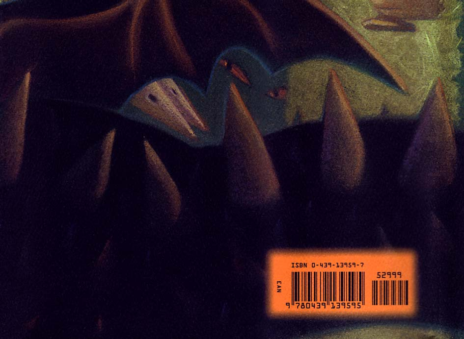

arry felt his feet slam into the ground; his injured leg gave H way, and he fell forward; his hand let go of the Triwizard Cup at last. He raised his head.
“Where are we?” he said.
Cedric shook his head. He got up, pulled Harry to his feet, and they looked around.
They had left the Hogwarts grounds completely; they had obviously traveled miles — perhaps hundreds of miles — for even the mountains surrounding the castle were gone. They were standing instead in a dark and overgrown graveyard; the black outline of a small church was visible beyond a large yew tree to their right. A hill rose above them to their left. Harry could just make out the outline of a fine old house on the hillside.
Cedric looked down at the Triwizard Cup and then up at Harry.
“Did anyone tell you the cup was a Portkey?” he asked.
� 636 �
“Nope,” said Harry. He was looking around the graveyard. It was completely silent and slightly eerie. “Is this supposed to be part of the task?”
“I dunno,” said Cedric. He sounded slightly nervous. “Wands out, d’you reckon?”
“Yeah,” said Harry, glad that Cedric had made the suggestion rather than him.
They pulled out their wands. Harry kept looking around him.
He had, yet again, the strange feeling that they were being watched.
“Someone’s coming,” he said suddenly.
Squinting tensely through the darkness, they watched the figure drawing nearer, walking steadily toward them between the graves.
Harry couldn’t make out a face, but from the way it was walking and holding its arms, he could tell that it was carrying something.
Whoever it was, he was short, and wearing a hooded cloak pulled up over his head to obscure his face. And — several paces nearer, the gap between them closing all the time — Harry saw that the thing in the person’s arms looked like a baby . . . or was it merely a bundle of robes?
Harry lowered his wand slightly and glanced sideways at Cedric.
Cedric shot him a quizzical look. They both turned back to watch the approaching figure.
It stopped beside a towering marble headstone, only six feet from them. For a second, Harry and Cedric and the short figure simply looked at one another.
And then, without warning, Harry’s scar exploded with pain. It was agony such as he had never felt in all his life; his wand slipped
� 637 �
from his fingers as he put his hands over his face; his knees buckled; he was on the ground and he could see nothing at all; his head was about to split open.
From far away, above his head, he heard a high, cold voice say,
“Kill the spare. ”
A swishing noise and a second voice, which screeched the words to the night: “Avada Kedavra!”
A blast of green light blazed through Harry’s eyelids, and he heard something heavy fall to the ground beside him; the pain in his scar reached such a pitch that he retched, and then it diminished; terrified of what he was about to see, he opened his stinging eyes.
Cedric was lying spread-eagled on the ground beside him. He was dead.
For a second that contained an eternity, Harry stared into Cedric’s face, at his open gray eyes, blank and expressionless as the windows of a deserted house, at his half-open mouth, which looked slightly surprised. And then, before Harry’s mind had accepted what he was seeing, before he could feel anything but numb disbelief, he felt himself being pulled to his feet.
The short man in the cloak had put down his bundle, lit his wand, and was dragging Harry toward the marble headstone.
Harry saw the name upon it flickering in the wandlight before he was forced around and slammed against it.
q l j = o f a a i b =
The cloaked man was now conjuring tight cords around Harry, tying him from neck to ankles to the headstone. Harry could hear
� 638 �
shallow, fast breathing from the depths of the hood; he struggled, and the man hit him — hit him with a hand that had a finger missing. And Harry realized who was under the hood. It was Wormtail.
“You!” he gasped.
But Wormtail, who had finished conjuring the ropes, did not reply; he was busy checking the tightness of the cords, his fingers trembling uncontrollably, fumbling over the knots. Once sure that Harry was bound so tightly to the headstone that he couldn’t move an inch, Wormtail drew a length of some black material from the inside of his cloak and stuffed it roughly into Harry’s mouth; then, without a word, he turned from Harry and hurried away. Harry couldn’t make a sound, nor could he see where Wormtail had gone; he couldn’t turn his head to see beyond the headstone; he could see only what was right in front of him.
Cedric’s body was lying some twenty feet away. Some way beyond him, glinting in the starlight, lay the Triwizard Cup. Harry’s wand was on the ground at Cedric’s feet. The bundle of robes that Harry had thought was a baby was close by, at the foot of the grave.
It seemed to be stirring fretfully. Harry watched it, and his scar seared with pain again . . . and he suddenly knew that he didn’t want to see what was in those robes . . . he didn’t want that bundle opened. . . .
He could hear noises at his feet. He looked down and saw a gigantic snake slithering through the grass, circling the headstone where he was tied. Wormtail’s fast, wheezy breathing was growing louder again. It sounded as though he was forcing something heavy across the ground. Then he came back within Harry’s range of vision, and Harry saw him pushing a stone cauldron to the foot of the grave. It was full of what seemed to be water — Harry could
� 639 �
hear it slopping around — and it was larger than any cauldron Harry had ever used; a great stone belly large enough for a full-grown man to sit in.
The thing inside the bundle of robes on the ground was stirring more persistently, as though it was trying to free itself. Now Wormtail was busying himself at the bottom of the cauldron with a wand. Suddenly there were crackling flames beneath it. The large snake slithered away into the darkness.
The liquid in the cauldron seemed to heat very fast. The surface began not only to bubble, but to send out fiery sparks, as though it were on fire. Steam was thickening, blurring the outline of Wormtail tending the fire. The movements beneath the robes became more agitated. And Harry heard the high, cold voice again.
“Hurry!”
The whole surface of the water was alight with sparks now. It might have been encrusted with diamonds.
“It is ready, Master.”
“Now . . .” said the cold voice.
Wormtail pulled open the robes on the ground, revealing what was inside them, and Harry let out a yell that was strangled in the wad of material blocking his mouth.
It was as though Wormtail had flipped over a stone and revealed something ugly, slimy, and blind — but worse, a hundred times worse. The thing Wormtail had been carrying had the shape of a crouched human child, except that Harry had never seen anything less like a child. It was hairless and scaly-looking, a dark, raw, red-dish black. Its arms and legs were thin and feeble, and its face —
no child alive ever had a face like that — flat and snakelike, with gleaming red eyes.
� 640 �
The thing seemed almost helpless; it raised its thin arms, put them around Wormtail’s neck, and Wormtail lifted it. As he did so, his hood fell back, and Harry saw the look of revulsion on Wormtail’s weak, pale face in the firelight as he carried the creature to the rim of the cauldron. For one moment, Harry saw the evil, flat face illuminated in the sparks dancing on the surface of the potion. And then Wormtail lowered the creature into the cauldron; there was a hiss, and it vanished below the surface; Harry heard its frail body hit the bottom with a soft thud.
Let it drown, Harry thought, his scar burning almost past endurance, please . . . let it drown. . . .
Wormtail was speaking. His voice shook; he seemed frightened beyond his wits. He raised his wand, closed his eyes, and spoke to the night.
“Bone of the father, unknowingly given, you will renew your son!”
The surface of the grave at Harry’s feet cracked. Horrified, Harry watched as a fine trickle of dust rose into the air at Wormtail’s command and fell softly into the cauldron. The diamond surface of the water broke and hissed; it sent sparks in all directions and turned a vivid, poisonous-looking blue.
And now Wormtail was whimpering. He pulled a long, thin, shining silver dagger from inside his cloak. His voice broke into petrified sobs.
“Flesh — of the servant — w-willingly given — you will —
revive — your master. ”
He stretched his right hand out in front of him — the hand with the missing finger. He gripped the dagger very tightly in his left hand and swung it upward.
Harry realized what Wormtail was about to do a second before it
� 641 �
happened — he closed his eyes as tightly as he could, but he could not block the scream that pierced the night, that went through Harry as though he had been stabbed with the dagger too. He heard something fall to the ground, heard Wormtail’s anguished panting, then a sickening splash, as something was dropped into the cauldron. Harry couldn’t stand to look . . . but the potion had turned a burning red; the light of it shone through Harry’s closed eyelids. . . .
Wormtail was gasping and moaning with agony. Not until Harry felt Wormtail’s anguished breath on his face did he realize that Wormtail was right in front of him.
“B-blood of the enemy . . . forcibly taken . . . you will . . . resurrect your foe. ”
Harry could do nothing to prevent it, he was tied too tightly. . . .
Squinting down, struggling hopelessly at the ropes binding him, he saw the shining silver dagger shaking in Wormtail’s remaining hand. He felt its point penetrate the crook of his right arm and blood seeping down the sleeve of his torn robes. Wormtail, still panting with pain, fumbled in his pocket for a glass vial and held it to Harry’s cut, so that a dribble of blood fell into it.
He staggered back to the cauldron with Harry’s blood. He poured it inside. The liquid within turned, instantly, a blinding white. Wormtail, his job done, dropped to his knees beside the cauldron, then slumped sideways and lay on the ground, cradling the bleeding stump of his arm, gasping and sobbing.
The cauldron was simmering, sending its diamond sparks in all directions, so blindingly bright that it turned all else to velvety blackness. Nothing happened. . . .
Let it have drowned, Harry thought, let it have gone wrong. . . .
� 642 �
And then, suddenly, the sparks emanating from the cauldron were extinguished. A surge of white steam billowed thickly from the cauldron instead, obliterating everything in front of Harry, so that he couldn’t see Wormtail or Cedric or anything but vapor hanging in the air. . . . It’s gone wrong, he thought . . . it’s drowned . . .
please . . . please let it be dead. . . .
But then, through the mist in front of him, he saw, with an icy surge of terror, the dark outline of a man, tall and skeletally thin, rising slowly from inside the cauldron.
“Robe me,” said the high, cold voice from behind the steam, and Wormtail, sobbing and moaning, still cradling his mutilated arm, scrambled to pick up the black robes from the ground, got to his feet, reached up, and pulled them one-handed over his master’s head.
The thin man stepped out of the cauldron, staring at Harry . . .
and Harry stared back into the face that had haunted his nightmares for three years. Whiter than a skull, with wide, livid scarlet eyes and a nose that was flat as a snake’s with slits for nostrils . . .
Lord Voldemort had risen again.
� 643 �
C H A P T E R T H I R T Y - T H R E E
THE DEATH EATERS
oldemort looked away from Harry and began examining V his own body. His hands were like large, pale spiders; his long white fingers caressed his own chest, his arms, his face; the red eyes, whose pupils were slits, like a cat’s, gleamed still more brightly through the darkness. He held up his hands and flexed the fingers, his expression rapt and exultant. He took not the slightest notice of Wormtail, who lay twitching and bleeding on the ground, nor of the great snake, which had slithered back into sight and was circling Harry again, hissing. Voldemort slipped one of those unnaturally long-fingered hands into a deep pocket and drew out a wand. He caressed it gently too; and then he raised it, and pointed it at Wormtail, who was lifted off the ground and thrown against the headstone where Harry was tied; he fell to the foot of it and lay there, crumpled up and crying. Voldemort turned his scarlet eyes upon Harry, laughing a high, cold, mirthless laugh.
� 644 �
Wormtail’s robes were shining with blood now; he had wrapped the stump of his arm in them.
“My Lord . . .” he choked, “my Lord . . . you promised . . . you did promise . . .”
“Hold out your arm,” said Voldemort lazily.
“Oh Master . . . thank you, Master . . .”
He extended the bleeding stump, but Voldemort laughed again.
“The other arm, Wormtail.”
“Master, please . . . please . . .”
Voldemort bent down and pulled out Wormtail’s left arm; he forced the sleeve of Wormtail’s robes up past his elbow, and Harry saw something upon the skin there, something like a vivid red tat-too — a skull with a snake protruding from its mouth — the image that had appeared in the sky at the Quidditch World Cup: the Dark Mark. Voldemort examined it carefully, ignoring Wormtail’s uncontrollable weeping.
“It is back,” he said softly, “they will all have noticed it . . . and now, we shall see . . . now we shall know . . .”
He pressed his long white forefinger to the brand on Wormtail’s arm.
The scar on Harry’s forehead seared with a sharp pain again, and Wormtail let out a fresh howl; Voldemort removed his fingers from Wormtail’s mark, and Harry saw that it had turned jet black.
A look of cruel satisfaction on his face, Voldemort straightened up, threw back his head, and stared around at the dark graveyard.
“How many wil be brave enough to return when they feel it?”
he whispered, his gleaming red eyes fixed upon the stars. “And how many will be foolish enough to stay away?”
� 645 �
He began to pace up and down before Harry and Wormtail, eyes sweeping the graveyard all the while. After a minute or so, he looked down at Harry again, a cruel smile twisting his snakelike face.
“You stand, Harry Potter, upon the remains of my late father,”
he hissed softly. “A Muggle and a fool . . . very like your dear mother. But they both had their uses, did they not? Your mother died to defend you as a child . . . and I killed my father, and see how useful he has proved himself, in death. . . .”
Voldemort laughed again. Up and down he paced, looking all around him as he walked, and the snake continued to circle in the grass.
“You see that house upon the hillside, Potter? My father lived there. My mother, a witch who lived here in this village, fell in love with him. But he abandoned her when she told him what she was. . . . He didn’t like magic, my father . . .
“He left her and returned to his Muggle parents before I was even born, Potter, and she died giving birth to me, leaving me to be raised in a Muggle orphanage . . . but I vowed to find him . . . I re-venged myself upon him, that fool who gave me his name . . . Tom Riddle. . . .”
Still he paced, his red eyes darting from grave to grave.
“Listen to me, reliving family history . . .” he said quietly, “why, I am growing quite sentimental. . . . But look, Harry! My true family returns. . . .”
The air was suddenly full of the swishing of cloaks. Between graves, behind the yew tree, in every shadowy space, wizards were Apparating. All of them were hooded and masked. And one by one they moved forward . . . slowly, cautiously, as though they could
� 646 �
hardly believe their eyes. Voldemort stood in silence, waiting for them. Then one of the Death Eaters fell to his knees, crawled toward Voldemort, and kissed the hem of his black robes.
“Master . . . Master . . .” he murmured.
The Death Eaters behind him did the same; each of them approaching Voldemort on his knees and kissing his robes, before backing away and standing up, forming a silent circle, which enclosed Tom Riddle’s grave, Harry, Voldemort, and the sobbing and twitching heap that was Wormtail. Yet they left gaps in the circle, as though waiting for more people. Voldemort, however, did not seem to expect more. He looked around at the hooded faces, and though there was no wind, a rustling seemed to run around the circle, as though it had shivered.
“Welcome, Death Eaters,” said Voldemort quietly. “Thirteen years . . . thirteen years since last we met. Yet you answer my call as though it were yesterday. . . . We are still united under the Dark Mark, then! Or are we?”
He put back his terrible face and sniffed, his slit-like nostrils widening.
“I smell guilt,” he said. “There is a stench of guilt upon the air.”
A second shiver ran around the circle, as though each member of it longed, but did not dare, to step back from him.
“I see you all, whole and healthy, with your powers intact —
such prompt appearances! — and I ask myself . . . why did this band of wizards never come to the aid of their master, to whom they swore eternal loyalty?”
No one spoke. No one moved except Wormtail, who was upon the ground, still sobbing over his bleeding arm.
“And I answer myself,” whispered Voldemort, “they must have
� 647 �
believed me broken, they thought I was gone. They slipped back among my enemies, and they pleaded innocence, and ignorance, and bewitchment. . . .
“And then I ask myself, but how could they have believed I would not rise again? They, who knew the steps I took, long ago, to guard myself against mortal death? They, who had seen proofs of the immensity of my power in the times when I was mightier than any wizard living?
“And I answer myself, perhaps they believed a still greater power could exist, one that could vanquish even Lord Voldemort . . . perhaps they now pay allegiance to another . . . perhaps that champion of commoners, of Mudbloods and Muggles, Albus Dumbledore?”
At the mention of Dumbledore’s name, the members of the circle stirred, and some muttered and shook their heads. Voldemort ignored them.
“It is a disappointment to me . . . I confess myself disappointed. . . .”
One of the men suddenly flung himself forward, breaking the circle. Trembling from head to foot, he collapsed at Voldemort’s feet.
“Master!” he shrieked, “Master, forgive me! Forgive us all!”
Voldemort began to laugh. He raised his wand.
“Crucio!”
The Death Eater on the ground writhed and shrieked; Harry was sure the sound must carry to the houses around. . . . Let the police come, he thought desperately . . . anyone . . . anything . . .
Voldemort raised his wand. The tortured Death Eater lay flat upon the ground, gasping.
“Get up, Avery,” said Voldemort softly. “Stand up. You ask for
� 648 �
forgiveness? I do not forgive. I do not forget. Thirteen long years . . . I want thirteen years’ repayment before I forgive you.
Wormtail here has paid some of his debt already, have you not, Wormtail?”
He looked down at Wormtail, who continued to sob.
“You returned to me, not out of loyalty, but out of fear of your old friends. You deserve this pain, Wormtail. You know that, don’t you?”
“Yes, Master,” moaned Wormtail, “please, Master . . . please . . .”
“Yet you helped return me to my body,” said Voldemort coolly, watching Wormtail sob on the ground. “Worthless and traitorous as you are, you helped me . . . and Lord Voldemort rewards his helpers. . . .”
Voldemort raised his wand again and whirled it through the air.
A streak of what looked like molten silver hung shining in the wand’s wake. Momentarily shapeless, it writhed and then formed itself into a gleaming replica of a human hand, bright as moonlight, which soared downward and fixed itself upon Wormtail’s bleeding wrist.
Wormtail’s sobbing stopped abruptly. His breathing harsh and ragged, he raised his head and stared in disbelief at the silver hand, now attached seamlessly to his arm, as though he were wearing a dazzling glove. He flexed the shining fingers, then, trembling, picked up a small twig on the ground and crushed it into powder.
“My Lord,” he whispered. “Master . . . it is beautiful . . . thank you . . . thank you. . . .”
He scrambled forward on his knees and kissed the hem of Voldemort’s robes.
� 649 �
“May your loyalty never waver again, Wormtail,” said Voldemort.
“No, my Lord . . . never, my Lord . . .”
Wormtail stood up and took his place in the circle, staring at his powerful new hand, his face still shining with tears. Voldemort now approached the man on Wormtail’s right.
“Lucius, my slippery friend,” he whispered, halting before him.
“I am told that you have not renounced the old ways, though to the world you present a respectable face. You are still ready to take the lead in a spot of Muggle-torture, I believe? Yet you never tried to find me, Lucius. . . . Your exploits at the Quidditch World Cup were fun, I daresay . . . but might not your energies have been better directed toward finding and aiding your master?”
“My Lord, I was constantly on the alert,” came Lucius Malfoy’s voice swiftly from beneath the hood. “Had there been any sign from you, any whisper of your whereabouts, I would have been at your side immediately, nothing could have prevented me —”
“And yet you ran from my Mark, when a faithful Death Eater sent it into the sky last summer?” said Voldemort lazily, and Mr.
Malfoy stopped talking abruptly. “Yes, I know all about that, Lucius. . . . You have disappointed me. . . . I expect more faithful service in the future.”
“Of course, my Lord, of course. . . . You are merciful, thank you. . . .”
Voldemort moved on, and stopped, staring at the space — large enough for two people — that separated Malfoy and the next man.
“The Lestranges should stand here,” said Voldemort quietly.
“But they are entombed in Azkaban. They were faithful. They went to Azkaban rather than renounce me. . . . When Azkaban is
� 650 �
broken open, the Lestranges will be honored beyond their dreams.
The dementors will join us . . . they are our natural allies . . . we will recall the banished giants . . . I shall have all my devoted servants returned to me, and an army of creatures whom all fear. . . .”
He walked on. Some of the Death Eaters he passed in silence, but he paused before others and spoke to them.
“Macnair . . . destroying dangerous beasts for the Ministry of Magic now, Wormtail tells me? You shall have better victims than that soon, Macnair. Lord Voldemort will provide. . . .”
“Thank you, Master . . . thank you,” murmured Macnair.
“And here” — Voldemort moved on to the two largest hooded figures — “we have Crabbe . . . you will do better this time, will you not, Crabbe? And you, Goyle?”
They bowed clumsily, muttering dully.
“Yes, Master . . .”
“We will, Master. . . .”
“The same goes for you, Nott,” said Voldemort quietly as he walked past a stooped figure in Mr. Goyle’s shadow.
“My Lord, I prostrate myself before you, I am your most faithful —”
“That will do,” said Voldemort.
He had reached the largest gap of all, and he stood surveying it with his blank, red eyes, as though he could see people standing there.
“And here we have six missing Death Eaters . . . three dead in my service. One, too cowardly to return . . . he will pay. One, who I believe has left me forever . . . he will be killed, of course . . . and one, who remains my most faithful servant, and who has already reentered my service.”
� 651 �
The Death Eaters stirred, and Harry saw their eyes dart sideways at one another through their masks.
“He is at Hogwarts, that faithful servant, and it was through his efforts that our young friend arrived here tonight. . . .
“Yes,” said Voldemort, a grin curling his lipless mouth as the eyes of the circle flashed in Harry’s direction. “Harry Potter has kindly joined us for my rebirthing party. One might go so far as to call him my guest of honor.”
There was a silence. Then the Death Eater to the right of Wormtail stepped forward, and Lucius Malfoy’s voice spoke from under the mask.
“Master, we crave to know . . . we beg you to tell us . . . how you have achieved this . . . this miracle . . . how you managed to return to us. . . .”
“Ah, what a story it is, Lucius,” said Voldemort. “And it begins — and ends — with my young friend here.”
He walked lazily over to stand next to Harry, so that the eyes of the whole circle were upon the two of them. The snake continued to circle.
“You know, of course, that they have called this boy my downfall?” Voldemort said softly, his red eyes upon Harry, whose scar began to burn so fiercely that he almost screamed in agony. “You al know that on the night I lost my powers and my body, I tried to kill him. His mother died in the attempt to save him — and unwit-tingly provided him with a protection I admit I had not fore-seen. . . . I could not touch the boy.”
Voldemort raised one of his long white fingers and put it very close to Harry’s cheek.
“His mother left upon him the traces of her sacrifice. . . . This is
� 652 �
old magic, I should have remembered it, I was foolish to overlook it . . . but no matter. I can touch him now.”
Harry felt the cold tip of the long white finger touch him, and thought his head would burst with the pain. Voldemort laughed softly in his ear, then took the finger away and continued addressing the Death Eaters.
“I miscalculated, my friends, I admit it. My curse was deflected by the woman’s foolish sacrifice, and it rebounded upon myself.
Aaah . . . pain beyond pain, my friends; nothing could have prepared me for it. I was ripped from my body, I was less than spirit, less than the meanest ghost . . . but still, I was alive. What I was, even I do not know . . . I, who have gone further than anybody along the path that leads to immortality. You know my goal — to conquer death. And now, I was tested, and it appeared that one or more of my experiments had worked . . . for I had not been killed, though the curse should have done it. Nevertheless, I was as powerless as the weakest creature alive, and without the means to help myself . . . for I had no body, and every spell that might have helped me required the use of a wand. . . .
“I remember only forcing myself, sleeplessly, endlessly, second by second, to exist. . . . I settled in a faraway place, in a forest, and I waited. . . . Surely, one of my faithful Death Eaters would try and find me . . . one of them would come and perform the magic I could not, to restore me to a body . . . but I waited in vain. . . .”
The shiver ran once more around the circle of listening Death Eaters. Voldemort let the silence spiral horribly before continuing.
“Only one power remained to me. I could possess the bodies of others. But I dared not go where other humans were plentiful, for I knew that the Aurors were still abroad and searching for me.
� 653 �
I sometimes inhabited animals — snakes, of course, being my preference — but I was little better off inside them than as pure spirit, for their bodies were ill adapted to perform magic . . . and my possession of them shortened their lives; none of them lasted long. . . .
“Then . . . four years ago . . . the means for my return seemed assured. A wizard — young, foolish, and gullible — wandered across my path in the forest I had made my home. Oh, he seemed the very chance I had been dreaming of . . . for he was a teacher at Dumbledore’s school . . . he was easy to bend to my will . . . he brought me back to this country, and after a while, I took possession of his body, to supervise him closely as he carried out my orders. But my plan failed. I did not manage to steal the Sorcerer’s Stone. I was not to be assured immortal life. I was thwarted . . .
thwarted, once again, by Harry Potter. . . .”
Silence once more; nothing was stirring, not even the leaves on the yew tree. The Death Eaters were quite motionless, the glittering eyes in their masks fixed upon Voldemort, and upon Harry.
“The servant died when I left his body, and I was left as weak as ever I had been,” Voldemort continued. “I returned to my hiding place far away, and I will not pretend to you that I didn’t then fear that I might never regain my powers. . . . Yes, that was perhaps my darkest hour . . . I could not hope that I would be sent another wizard to possess . . . and I had given up hope, now, that any of my Death Eaters cared what had become of me. . . .”
One or two of the masked wizards in the circle moved uncomfortably, but Voldemort took no notice.
“And then, not even a year ago, when I had almost abandoned hope, it happened at last . . . a servant returned to me. Wormtail here, who had faked his own death to escape justice, was driven out
� 654 �
of hiding by those he had once counted friends, and decided to return to his master. He sought me in the country where it had long been rumored I was hiding . . . helped, of course, by the rats he met along the way. Wormtail has a curious affinity with rats, do you not, Wormtail? His filthy little friends told him there was a place, deep in an Albanian forest, that they avoided, where small animals like themselves had met their deaths by a dark shadow that possessed them. . . .
“But his journey back to me was not smooth, was it, Wormtail?
For, hungry one night, on the edge of the very forest where he had hoped to find me, he foolishly stopped at an inn for some food . . .
and who should he meet there, but one Bertha Jorkins, a witch from the Ministry of Magic.
“Now see the way that fate favors Lord Voldemort. This might have been the end of Wormtail, and of my last hope for regenera-tion. But Wormtail — displaying a presence of mind I would never have expected from him — convinced Bertha Jorkins to accompany him on a nighttime stroll. He overpowered her . . . he brought her to me. And Bertha Jorkins, who might have ruined all, proved instead to be a gift beyond my wildest dreams . . . for — with a little persuasion — she became a veritable mine of information.
“She told me that the Triwizard Tournament would be played at Hogwarts this year. She told me that she knew of a faithful Death Eater who would be only too willing to help me, if I could only contact him. She told me many things . . . but the means I used to break the Memory Charm upon her were powerful, and when I had extracted all useful information from her, her mind and body were both damaged beyond repair. She had now served her purpose. I could not possess her. I disposed of her.”
� 655 �
Voldemort smiled his terrible smile, his red eyes blank and pitiless.
“Wormtail’s body, of course, was ill adapted for possession, as all assumed him dead, and would attract far too much attention if noticed. However, he was the able-bodied servant I needed, and, poor wizard though he is, Wormtail was able to follow the instructions I gave him, which would return me to a rudimentary, weak body of my own, a body I would be able to inhabit while awaiting the essential ingredients for true rebirth . . . a spell or two of my own invention . . . a little help from my dear Nagini,” Voldemort’s red eyes fell upon the continually circling snake, “a potion con-cocted from unicorn blood, and the snake venom Nagini provided . . . I was soon returned to an almost human form, and strong enough to travel.
“There was no hope of stealing the Sorcerer’s Stone anymore, for I knew that Dumbledore would have seen to it that it was destroyed. But I was willing to embrace mortal life again, before chasing immortality. I set my sights lower . . . I would settle for my old body back again, and my old strength.
“I knew that to achieve this — it is an old piece of Dark Magic, the potion that revived me tonight — I would need three powerful ingredients. Well, one of them was already at hand, was it not, Wormtail? Flesh given by a servant. . . .
“My father’s bone, naturally, meant that we would have to come here, where he was buried. But the blood of a foe . . . Wormtail would have had me use any wizard, would you not, Wormtail? Any wizard who had hated me . . . as so many of them still do. But I knew the one I must use, if I was to rise again, more powerful than I had been when I had fallen. I wanted Harry Potter’s blood.
� 656 �
I wanted the blood of the one who had stripped me of power thirteen years ago . . . for the lingering protection his mother once gave him would then reside in my veins too. . . .
“But how to get at Harry Potter? For he has been better protected than I think even he knows, protected in ways devised by Dumbledore long ago, when it fell to him to arrange the boy’s future. Dumbledore invoked an ancient magic, to ensure the boy’s protection as long as he is in his relations’ care. Not even I can touch him there. . . . Then, of course, there was the Quidditch World Cup. . . . I thought his protection might be weaker there, away from his relations and Dumbledore, but I was not yet strong enough to attempt kidnap in the midst of a horde of Ministry wizards. And then, the boy would return to Hogwarts, where he is under the crooked nose of that Muggle-loving fool from morning until night. So how could I take him?
“Why . . . by using Bertha Jorkins’s information, of course. Use my one faithful Death Eater, stationed at Hogwarts, to ensure that the boy’s name was entered into the Goblet of Fire. Use my Death Eater to ensure that the boy won the tournament — that he touched the Triwizard Cup first — the cup which my Death Eater had turned into a Portkey, which would bring him here, beyond the reach of Dumbledore’s help and protection, and into my waiting arms. And here he is . . . the boy you all believed had been my downfall. . . .”
Voldemort moved slowly forward and turned to face Harry. He raised his wand.
“Crucio!”
It was pain beyond anything Harry had ever experienced; his very bones were on fire; his head was surely splitting along his scar;
� 657 �
his eyes were rolling madly in his head; he wanted it to end . . . to black out . . . to die . . .
And then it was gone. He was hanging limply in the ropes binding him to the headstone of Voldemort’s father, looking up into those bright red eyes through a kind of mist. The night was ringing with the sound of the Death Eaters’ laughter.
“You see, I think, how foolish it was to suppose that this boy could ever have been stronger than me,” said Voldemort. “But I want there to be no mistake in anybody’s mind. Harry Potter escaped me by a lucky chance. And I am now going to prove my power by kil ing him, here and now, in front of you all, when there is no Dumbledore to help him, and no mother to die for him. I will give him his chance. He will be allowed to fight, and you will be left in no doubt which of us is the stronger. Just a little longer, Nagini,” he whispered, and the snake glided away through the grass to where the Death Eaters stood watching.
“Now untie him, Wormtail, and give him back his wand.”
� 658 �
C H A P T E R T H I R T Y - F O U R
PRIORI INCANTATEM
ormtail approached Harry, who scrambled to find his W feet, to support his own weight before the ropes were untied. Wormtail raised his new silver hand, pulled out the wad of material gagging Harry, and then, with one swipe, cut through the bonds tying Harry to the gravestone.
There was a split second, perhaps, when Harry might have considered running for it, but his injured leg shook under him as he stood on the overgrown grave, as the Death Eaters closed ranks, forming a tighter circle around him and Voldemort, so that the gaps where the missing Death Eaters should have stood were filled.
Wormtail walked out of the circle to the place where Cedric’s body lay and returned with Harry’s wand, which he thrust roughly into Harry’s hand without looking at him. Then Wormtail resumed his place in the circle of watching Death Eaters.
“You have been taught how to duel, Harry Potter?” said Voldemort softly, his red eyes glinting through the darkness.
� 659 �
At these words Harry remembered, as though from a former life, the dueling club at Hogwarts he had attended briefly two years ago. . . . All he had learned there was the Disarming Spell, “Expelliarmus” . . . and what use would it be to deprive Voldemort of his wand, even if he could, when he was surrounded by Death Eaters, outnumbered by at least thirty to one? He had never learned anything that could possibly fit him for this. He knew he was facing the thing against which Moody had always warned . . . the un-blockable Avada Kedavra curse — and Voldemort was right — his mother was not here to die for him this time. . . . He was quite unprotected. . . .
“We bow to each other, Harry,” said Voldemort, bending a little, but keeping his snakelike face upturned to Harry. “Come, the niceties must be observed. . . . Dumbledore would like you to show manners. . . . Bow to death, Harry. . . .”
The Death Eaters were laughing again. Voldemort’s lipless mouth was smiling. Harry did not bow. He was not going to let Voldemort play with him before killing him . . . he was not going to give him that satisfaction. . . .
“I said, bow, ” Voldemort said, raising his wand — and Harry felt his spine curve as though a huge, invisible hand were bending him ruthlessly forward, and the Death Eaters laughed harder than ever.
“Very good,” said Voldemort softly, and as he raised his wand the pressure bearing down upon Harry lifted too. “And now you face me, like a man . . . straight-backed and proud, the way your father died. . . .
“And now — we duel.”
Voldemort raised his wand, and before Harry could do anything to defend himself, before he could even move, he had been hit again
� 660 �
by the Cruciatus Curse. The pain was so intense, so all-consuming, that he no longer knew where he was. . . . White-hot knives were piercing every inch of his skin, his head was surely going to burst with pain, he was screaming more loudly than he’d ever screamed in his life —
And then it stopped. Harry rolled over and scrambled to his feet; he was shaking as uncontrollably as Wormtail had done when his hand had been cut off; he staggered sideways into the wall of watching Death Eaters, and they pushed him away, back toward Voldemort.
“A little break,” said Voldemort, the slit-like nostrils dilating with excitement, “a little pause . . . That hurt, didn’t it, Harry? You don’t want me to do that again, do you?”
Harry didn’t answer. He was going to die like Cedric, those pitiless red eyes were telling him so . . . he was going to die, and there was nothing he could do about it. . . but he wasn’t going to play along. He wasn’t going to obey Voldemort . . . he wasn’t going to beg. . . .
“I asked you whether you want me to do that again,” said Voldemort softly. “Answer me! Imperio!”
And Harry felt, for the third time in his life, the sensation that his mind had been wiped of all thought. . . . Ah, it was bliss, not to think, it was as though he were floating, dreaming . . . just answer no . . . say no . . . just answer no. . . .
I will not, said a stronger voice, in the back of his head, I won’t answer. . . .
Just answer no. . . .
I won’t do it, I won’t say it. . . .
Just answer no. . . .
� 661 �
“I WON’T!”
And these words burst from Harry’s mouth; they echoed through the graveyard, and the dream state was lifted as suddenly as though cold water had been thrown over him — back rushed the aches that the Cruciatus Curse had left all over his body — back rushed the realization of where he was, and what he was facing. . . .
“You won’t?” said Voldemort quietly, and the Death Eaters were not laughing now. “You won’t say no? Harry, obedience is a virtue I need to teach you before you die. . . . Perhaps another little dose of pain?”
Voldemort raised his wand, but this time Harry was ready; with the reflexes born of his Quidditch training, he flung himself sideways onto the ground; he rolled behind the marble headstone of Voldemort’s father, and he heard it crack as the curse missed him.
“We are not playing hide-and-seek, Harry,” said Voldemort’s soft, cold voice, drawing nearer, as the Death Eaters laughed. “You cannot hide from me. Does this mean you are tired of our duel? Does this mean that you would prefer me to finish it now, Harry? Come out, Harry . . . come out and play, then . . . it will be quick . . . it might even be painless . . . I would not know . . . I have never died. . . .”
Harry crouched behind the headstone and knew the end had come. There was no hope . . . no help to be had. And as he heard Voldemort draw nearer still, he knew one thing only, and it was beyond fear or reason: He was not going to die crouching here like a child playing hide-and-seek; he was not going to die kneeling at Voldemort’s feet . . . he was going to die upright like his father, and he was going to die trying to defend himself, even if no defense was possible. . . .
� 662 �
Before Voldemort could stick his snakelike face around the headstone, Harry stood up . . . he gripped his wand tightly in his hand, thrust it out in front of him, and threw himself around the headstone, facing Voldemort.
Voldemort was ready. As Harry shouted, “Expelliarmus!” Voldemort cried, “Avada Kedavra!”
A jet of green light issued from Voldemort’s wand just as a jet of red light blasted from Harry’s — they met in midair — and suddenly Harry’s wand was vibrating as though an electric charge were surging through it; his hand seized up around it; he couldn’t have released it if he’d wanted to — and a narrow beam of light connected the two wands, neither red nor green, but bright, deep gold.
Harry, following the beam with his astonished gaze, saw that Voldemort’s long white fingers too were gripping a wand that was shaking and vibrating.
And then — nothing could have prepared Harry for this — he felt his feet lift from the ground. He and Voldemort were both being raised into the air, their wands still connected by that thread of shimmering golden light. They glided away from the tombstone of Voldemort’s father and then came to rest on a patch of ground that was clear and free of graves. . . . The Death Eaters were shouting; they were asking Voldemort for instructions; they were closing in, reforming the circle around Harry and Voldemort, the snake slithering at their heels, some of them drawing their wands —
The golden thread connecting Harry and Voldemort splintered; though the wands remained connected, a thousand more beams arced high over Harry and Voldemort, crisscrossing all around them, until they were enclosed in a golden, dome-shaped web, a
� 663 �
cage of light, beyond which the Death Eaters circled like jackals, their cries strangely muffled now. . . .
“Do nothing!” Voldemort shrieked to the Death Eaters, and Harry saw his red eyes wide with astonishment at what was happening, saw him fighting to break the thread of light still connecting his wand with Harry’s; Harry held onto his wand more tightly, with both hands, and the golden thread remained unbroken. “Do nothing unless I command you!” Voldemort shouted to the Death Eaters.
And then an unearthly and beautiful sound filled the air. . . . It was coming from every thread of the light-spun web vibrating around Harry and Voldemort. It was a sound Harry recognized, though he had heard it only once before in his life: phoenix song.
It was the sound of hope to Harry . . . the most beautiful and welcome thing he had ever heard in his life. . . . He felt as though the song were inside him instead of just around him. . . . It was the sound he connected with Dumbledore, and it was almost as though a friend were speaking in his ear. . . .
Don’t break the connection.
I know, Harry told the music, I know I mustn’t . . . but no sooner had he thought it, than the thing became much harder to do. His wand began to vibrate more powerfully than ever . . . and now the beam between him and Voldemort changed too . . . it was as though large beads of light were sliding up and down the thread connecting the wands — Harry felt his wand give a shudder under his hand as the light beads began to slide slowly and steadily his way. . . . The direction of the beam’s movement was now toward him, from Voldemort, and he felt his wand shudder angrily. . . .
As the closest bead of light moved nearer to Harry’s wand tip,
� 664 �
the wood beneath his fingers grew so hot he feared it would burst into flame. The closer that bead moved, the harder Harry’s wand vibrated; he was sure his wand would not survive contact with it; it felt as though it was about to shatter under his fingers —
He concentrated every last particle of his mind upon forcing the bead back toward Voldemort, his ears full of phoenix song, his eyes furious, fixed . . . and slowly, very slowly, the beads quivered to a halt, and then, just as slowly, they began to move the other way . . .
and it was Voldemort’s wand that was vibrating extra-hard now . . .
Voldemort who looked astonished, and almost fearful. . . .
One of the beads of light was quivering, inches from the tip of Voldemort’s wand. Harry didn’t understand why he was doing it, didn’t know what it might achieve . . . but he now concentrated as he had never done in his life on forcing that bead of light right back into Voldemort’s wand . . . and slowly . . . very slowly . . . it moved along the golden thread . . . it trembled for a moment. . . and then it connected. . . .
At once, Voldemort’s wand began to emit echoing screams of pain . . . then — Voldemort’s red eyes widened with shock — a dense, smoky hand flew out of the tip of it and vanished . . . the ghost of the hand he had made Wormtail . . . more shouts of pain . . . and then something much larger began to blossom from Voldemort’s wand tip, a great, grayish something, that looked as though it were made of the solidest, densest smoke. . . . It was a head . . . now a chest and arms . . . the torso of Cedric Diggory.
If ever Harry might have released his wand from shock, it would have been then, but instinct kept him clutching his wand tightly, so that the thread of golden light remained unbroken, even though the thick gray ghost of Cedric Diggory ( was it a ghost? it looked so
� 665 �
solid) emerged in its entirety from the end of Voldemort’s wand, as though it were squeezing itself out of a very narrow tunnel . . . and this shade of Cedric stood up, and looked up and down the golden thread of light, and spoke.
“Hold on, Harry,” it said.
Its voice was distant and echoing. Harry looked at Voldemort . . . his wide red eyes were still shocked . . . he had no more expected this than Harry had . . . and, very dimly, Harry heard the frightened yells of the Death Eaters, prowling around the edges of the golden dome. . . .
More screams of pain from the wand . . . and then something else emerged from its tip . . . the dense shadow of a second head, quickly followed by arms and torso . . . an old man Harry had seen only in a dream was now pushing himself out of the end of the wand just as Cedric had done . . . and his ghost, or his shadow, or whatever it was, fell next to Cedric’s, and surveyed Harry and Voldemort, and the golden web, and the connected wands, with mild surprise, leaning on his walking stick. . . .
“He was a real wizard, then?” the old man said, his eyes on Voldemort. “Killed me, that one did. . . . You fight him, boy. . . .”
But already, yet another head was emerging . . . and this head, gray as a smoky statue, was a woman’s. . . . Harry, both arms shaking now as he fought to keep his wand still, saw her drop to the ground and straighten up like the others, staring. . . .
The shadow of Bertha Jorkins surveyed the battle before her with wide eyes.
“Don’t let go, now!” she cried, and her voice echoed like Cedric’s as though from very far away. “Don’t let him get you, Harry —
don’t let go!”
� 666 �
She and the other two shadowy figures began to pace around the inner walls of the golden web, while the Death Eaters flitted around the outside of it . . . and Voldemort’s dead victims whispered as they circled the duelers, whispered words of encouragement to Harry, and hissed words Harry couldn’t hear to Voldemort.
And now another head was emerging from the tip of Voldemort’s wand . . . and Harry knew when he saw it who it would be . . . he knew, as though he had expected it from the moment when Cedric had appeared from the wand . . . knew, because the woman was the one he’d thought of more than any other tonight. . . .
The smoky shadow of a young woman with long hair fell to the ground as Bertha had done, straightened up, and looked at him . . .
and Harry, his arms shaking madly now, looked back into the ghostly face of his mother.
“Your father’s coming . . .” she said quietly. “Hold on for your father . . . it will be all right . . . hold on. . . .”
And he came . . . first his head, then his body . . . tall and untidy-haired like Harry, the smoky, shadowy form of James Potter blossomed from the end of Voldemort’s wand, fell to the ground, and straightened like his wife. He walked close to Harry, looking down at him, and he spoke in the same distant, echoing voice as the others, but quietly, so that Voldemort, his face now livid with fear as his victims prowled around him, could not hear. . . .
“When the connection is broken, we will linger for only moments . . . but we will give you time . . . you must get to the Portkey, it will return you to Hogwarts . . . do you understand, Harry?”
� 667 �
“Yes,” Harry gasped, fighting now to keep a hold on his wand, which was slipping and sliding beneath his fingers.
“Harry . . .” whispered the figure of Cedric, “take my body back, will you? Take my body back to my parents. . . .”
“I wil ,” said Harry, his face screwed up with the effort of holding the wand.
“Do it now,” whispered his father’s voice, “be ready to run . . .
do it now. . . .”
“NOW!” Harry yelled; he didn’t think he could have held on for another moment anyway — he pulled his wand upward with an almighty wrench, and the golden thread broke; the cage of light vanished, the phoenix song died — but the shadowy figures of Voldemort’s victims did not disappear — they were closing in upon Voldemort, shielding Harry from his gaze —
And Harry ran as he had never run in his life, knocking two stunned Death Eaters aside as he passed; he zigzagged behind headstones, feeling their curses following him, hearing them hit the headstones — he was dodging curses and graves, pelting toward Cedric’s body, no longer aware of the pain in his leg, his whole being concentrated on what he had to do —
“Stun him!” he heard Voldemort scream.
Ten feet from Cedric, Harry dived behind a marble angel to avoid the jets of red light and saw the tip of its wing shatter as the spells hit it. Gripping his wand more tightly, he dashed out from behind the angel —
“Impedimenta!” he bellowed, pointing his wand wildly over his shoulder at the Death Eaters running at him.
From a muffled yell, he thought he had stopped at least one of them, but there was no time to stop and look; he jumped over the
� 668 �
cup and dived as he heard more wand blasts behind him; more jets of light flew over his head as he fell, stretching out his hand to grab Cedric’s arm —
“Stand aside! I will kill him! He is mine!” shrieked Voldemort.
Harry’s hand had closed on Cedric’s wrist; one tombstone stood between him and Voldemort, but Cedric was too heavy to carry, and the cup was out of reach —
Voldemort’s red eyes flamed in the darkness. Harry saw his mouth curl into a smile, saw him raise his wand.
“Accio!” Harry yelled, pointing his wand at the Triwizard Cup.
It flew into the air and soared toward him. Harry caught it by the handle —
He heard Voldemort’s scream of fury at the same moment that he felt the jerk behind his navel that meant the Portkey had worked — it was speeding him away in a whirl of wind and color, and Cedric along with him. . . . They were going back.
� 669 �
C H A P T E R T H I R T Y - F I V E
VERITASERUM
arry felt himself slam flat into the ground; his face was H pressed into grass; the smell of it filled his nostrils. He had closed his eyes while the Portkey transported him, and he kept them closed now. He did not move. All the breath seemed to have been knocked out of him; his head was swimming so badly he felt as though the ground beneath him were swaying like the deck of a ship. To hold himself steady, he tightened his hold on the two things he was still clutching: the smooth, cold handle of the Triwizard Cup and Cedric’s body. He felt as though he would slide away into the blackness gathering at the edges of his brain if he let go of either of them. Shock and exhaustion kept him on the ground, breathing in the smell of the grass, waiting . . . waiting for someone to do something . . . something to happen . . . and all the while, his scar burned dully on his forehead. . . .
A torrent of sound deafened and confused him; there were voices everywhere, footsteps, screams. . . . He remained where he
� 670 �
was, his face screwed up against the noise, as though it were a nightmare that would pass. . . .
Then a pair of hands seized him roughly and turned him over.
“Harry! Harry!”
He opened his eyes.
He was looking up at the starry sky, and Albus Dumbledore was crouched over him. The dark shadows of a crowd of people pressed in around them, pushing nearer; Harry felt the ground beneath his head reverberating with their footsteps.
He had come back to the edge of the maze. He could see the stands rising above him, the shapes of people moving in them, the stars above.
Harry let go of the cup, but he clutched Cedric to him even more tightly. He raised his free hand and seized Dumbledore’s wrist, while Dumbledore’s face swam in and out of focus.
“He’s back,” Harry whispered. “He’s back. Voldemort.”
“What’s going on? What’s happened?”
The face of Cornelius Fudge appeared upside down over Harry; it looked white, appalled.
“My God — Diggory!” it whispered. “Dumbledore — he’s dead!”
The words were repeated, the shadowy figures pressing in on them gasped it to those around them . . . and then others shouted it — screeched it — into the night — “He’s dead!” “He’s dead!”
“Cedric Diggory! Dead!”
“Harry, let go of him,” he heard Fudge’s voice say, and he felt fingers trying to pry him from Cedric’s limp body, but Harry wouldn’t let him go. Then Dumbledore’s face, which was still blurred and misted, came closer.
“Harry, you can’t help him now. It’s over. Let go.”
� 671 �
“He wanted me to bring him back,” Harry muttered — it seemed important to explain this. “He wanted me to bring him back to his parents. . . .”
“That’s right, Harry . . . just let go now. . . .”
Dumbledore bent down, and with extraordinary strength for a man so old and thin, raised Harry from the ground and set him on his feet. Harry swayed. His head was pounding. His injured leg would no longer support his weight. The crowd around them jostled, fighting to get closer, pressing darkly in on him — “What’s happened?” “What’s wrong with him?” “Diggory’s dead!”
“He’ll need to go to the hospital wing!” Fudge was saying loudly.
“He’s ill, he’s injured — Dumbledore, Diggory’s parents, they’re here, they’re in the stands. . . .”
“I’ll take Harry, Dumbledore, I’ll take him —”
“No, I would prefer —”
“Dumbledore, Amos Diggory’s running . . . he’s coming over. . . .
Don’t you think you should tell him — before he sees — ?”
“Harry, stay here —”
Girls were screaming, sobbing hysterically. . . . The scene flickered oddly before Harry’s eyes. . . .
“It’s all right, son, I’ve got you . . . come on . . . hospital wing . . .”
“Dumbledore said stay,” said Harry thickly, the pounding in his scar making him feel as though he was about to throw up; his vision was blurring worse than ever.
“You need to lie down. . . . Come on now. . . .”
Someone larger and stronger than he was was half pulling, half carrying him through the frightened crowd. Harry heard people gasping, screaming, and shouting as the man supporting him
� 672 �
pushed a path through them, taking him back to the castle. Across the lawn, past the lake and the Durmstrang ship, Harry heard nothing but the heavy breathing of the man helping him walk.
“What happened, Harry?” the man asked at last as he lifted Harry up the stone steps. Clunk. Clunk. Clunk. It was Mad-Eye Moody.
“Cup was a Portkey,” said Harry as they crossed the entrance hal . “Took me and Cedric to a graveyard . . . and Voldemort was there . . . Lord Voldemort . . .”
Clunk. Clunk. Clunk. Up the marble stairs . . .
“The Dark Lord was there? What happened then?”
“Killed Cedric . . . they killed Cedric. . . .”
“And then?”
Clunk. Clunk. Clunk. Along the corridor . . .
“Made a potion . . . got his body back. . . .”
“The Dark Lord got his body back? He’s returned?”
“And the Death Eaters came . . . and then we dueled. . . .”
“You dueled with the Dark Lord?”
“Got away . . . my wand . . . did something funny. . . . I saw my mum and dad . . . they came out of his wand. . . .”
“In here, Harry . . . in here, and sit down. . . . You’ll be all right now . . . drink this. . . .”
Harry heard a key scrape in a lock and felt a cup being pushed into his hands.
“Drink it . . . you’ll feel better . . . come on, now, Harry, I need to know exactly what happened. . . .”
Moody helped tip the stuff down Harry’s throat; he coughed, a peppery taste burning his throat. Moody’s office came into sharper
� 673 �
focus, and so did Moody himself. . . . He looked as white as Fudge had looked, and both eyes were fixed unblinkingly upon Harry’s face.
“Voldemort’s back, Harry? You’re sure he’s back? How did he do it?”
“He took stuff from his father’s grave, and from Wormtail, and me,” said Harry. His head felt clearer; his scar wasn’t hurting so badly; he could now see Moody’s face distinctly, even though the office was dark. He could still hear screaming and shouting from the distant Quidditch field.
“What did the Dark Lord take from you?” said Moody.
“Blood,” said Harry, raising his arm. His sleeve was ripped where Wormtail’s dagger had torn it.
Moody let out his breath in a long, low hiss.
“And the Death Eaters? They returned?”
“Yes,” said Harry. “Loads of them . . .”
“How did he treat them?” Moody asked quietly. “Did he forgive them?”
But Harry had suddenly remembered. He should have told Dumbledore, he should have said it straightaway —
“There’s a Death Eater at Hogwarts! There’s a Death Eater here — they put my name in the Goblet of Fire, they made sure I got through to the end —”
Harry tried to get up, but Moody pushed him back down.
“I know who the Death Eater is,” he said quietly.
“Karkaroff?” said Harry wildly. “Where is he? Have you got him?
Is he locked up?”
“Karkaroff?” said Moody with an odd laugh. “Karkaroff fled tonight, when he felt the Dark Mark burn upon his arm. He
� 674 �
betrayed too many faithful supporters of the Dark Lord to wish to meet them . . . but I doubt he will get far. The Dark Lord has ways of tracking his enemies.”
“Karkaroff’s gone? He ran away? But then — he didn’t put my name in the goblet?”
“No,” said Moody slowly. “No, he didn’t. It was I who did that.”
Harry heard, but didn’t believe.
“No, you didn’t,” he said. “You didn’t do that . . . you can’t have done . . .”
“I assure you I did,” said Moody, and his magical eye swung around and fixed upon the door, and Harry knew he was making sure that there was no one outside it. At the same time, Moody drew out his wand and pointed it at Harry.
“He forgave them, then?” he said. “The Death Eaters who went free? The ones who escaped Azkaban?”
“What?” said Harry.
He was looking at the wand Moody was pointing at him. This was a bad joke, it had to be.
“I asked you,” said Moody quietly, “whether he forgave the scum who never even went to look for him. Those treacherous cowards who wouldn’t even brave Azkaban for him. The faithless, worthless bits of filth who were brave enough to cavort in masks at the Quidditch World Cup, but fled at the sight of the Dark Mark when I fired it into the sky.”
“You fired . . . What are you talking about . . . ?”
“I told you, Harry . . . I told you. If there’s one thing I hate more than any other, it’s a Death Eater who walked free. They turned their backs on my master when he needed them most. I expected him to punish them. I expected him to torture them. Tell me he
� 675 �
hurt them, Harry. . . .” Moody’s face was suddenly lit with an insane smile. “Tell me he told them that I, I alone remained faithful . . . prepared to risk everything to deliver to him the one thing he wanted above all . . . you. ”
“You didn’t . . . it — it can’t be you. . . .”
“Who put your name in the Goblet of Fire, under the name of a different school? I did. Who frightened off every person I thought might try to hurt you or prevent you from winning the tournament? I did. Who nudged Hagrid into showing you the dragons? I did. Who helped you see the only way you could beat the dragon?
I did. ”
Moody’s magical eye had now left the door. It was fixed upon Harry. His lopsided mouth leered more widely than ever.
“It hasn’t been easy, Harry, guiding you through these tasks without arousing suspicion. I have had to use every ounce of cunning I possess, so that my hand would not be detectable in your success. Dumbledore would have been very suspicious if you had managed everything too easily. As long as you got into that maze, preferably with a decent head start — then, I knew, I would have a chance of getting rid of the other champions and leaving your way clear. But I also had to contend with your stupidity. The second task . . . that was when I was most afraid we would fail. I was keeping watch on you, Potter. I knew you hadn’t worked out the egg’s clue, so I had to give you another hint —”
“You didn’t,” Harry said hoarsely. “Cedric gave me the clue —”
“Who told Cedric to open it underwater? I did. I trusted that he would pass the information on to you. Decent people are so easy to manipulate, Potter. I was sure Cedric would want to repay you for telling him about the dragons, and so he did. But even then,
� 676 �
Potter, even then you seemed likely to fail. I was watching all the time . . . all those hours in the library. Didn’t you realize that the book you needed was in your dormitory all along? I planted it there early on, I gave it to the Longbottom boy, don’t you remember?
Magical Water Plants of the Mediterranean. It would have told you all you needed to know about gillyweed. I expected you to ask everyone and anyone you could for help. Longbottom would have told you in an instant. But you did not . . . you did not. . . . You have a streak of pride and independence that might have ruined all.
“So what could I do? Feed you information from another innocent source. You told me at the Yule Ball a house-elf called Dobby had given you a Christmas present. I called the elf to the staffroom to collect some robes for cleaning. I staged a loud conversation with Professor McGonagall about the hostages who had been taken, and whether Potter would think to use gillyweed. And your little elf friend ran straight to Snape’s office and then hurried to find you. . . .”
Moody’s wand was still pointing directly at Harry’s heart. Over his shoulder, foggy shapes were moving in the Foe-Glass on the wall.
“You were so long in that lake, Potter, I thought you had drowned. But luckily, Dumbledore took your idiocy for nobility, and marked you high for it. I breathed again.
“You had an easier time of it than you should have in that maze tonight, of course,” said Moody. “I was patrolling around it, able to see through the outer hedges, able to curse many obstacles out of your way. I Stunned Fleur Delacour as she passed. I put the Imperius Curse on Krum, so that he would finish Diggory and leave your path to the cup clear.”
� 677 �
Harry stared at Moody. He just didn’t see how this could be. . . .
Dumbledore’s friend, the famous Auror . . . the one who had caught so many Death Eaters . . . It made no sense . . . no sense at all. . . .
The foggy shapes in the Foe-Glass were sharpening, had become more distinct. Harry could see the outlines of three people over Moody’s shoulder, moving closer and closer. But Moody wasn’t watching them. His magical eye was upon Harry.
“The Dark Lord didn’t manage to kil you, Potter, and he so wanted to,” whispered Moody. “Imagine how he will reward me when he finds I have done it for him. I gave you to him — the thing he needed above all to regenerate — and then I killed you for him. I will be honored beyond all other Death Eaters. I will be his dearest, his closest supporter . . . closer than a son. . . .”
Moody’s normal eye was bulging, the magical eye fixed upon Harry. The door was barred, and Harry knew he would never reach his own wand in time. . . .
“The Dark Lord and I,” said Moody, and he looked completely insane now, towering over Harry, leering down at him, “have much in common. Both of us, for instance, had very disappointing fathers . . . very disappointing indeed. Both of us suffered the indignity, Harry, of being named after those fathers. And both of us had the pleasure . . . the very great pleasure . . . of killing our fathers to ensure the continued rise of the Dark Order!”
“You’re mad,” Harry said — he couldn’t stop himself — “you’re mad!”
“Mad, am I?” said Moody, his voice rising uncontrollably. “We’ll see! We’ll see who’s mad, now that the Dark Lord has returned,
� 678 �
with me at his side! He is back, Harry Potter, you did not conquer him — and now — I conquer you!”
Moody raised his wand, he opened his mouth; Harry plunged his own hand into his robes —
“Stupefy!” There was a blinding flash of red light, and with a great splintering and crashing, the door of Moody’s office was blasted apart —
Moody was thrown backward onto the office floor. Harry, still staring at the place where Moody’s face had been, saw Albus Dumbledore, Professor Snape, and Professor McGonagall looking back at him out of the Foe-Glass. He looked around and saw the three of them standing in the doorway, Dumbledore in front, his wand outstretched.
At that moment, Harry fully understood for the first time why people said Dumbledore was the only wizard Voldemort had ever feared. The look upon Dumbledore’s face as he stared down at the unconscious form of Mad-Eye Moody was more terrible than Harry could have ever imagined. There was no benign smile upon Dumbledore’s face, no twinkle in the eyes behind the spectacles.
There was cold fury in every line of the ancient face; a sense of power radiated from Dumbledore as though he were giving off burning heat.
He stepped into the office, placed a foot underneath Moody’s unconscious body, and kicked him over onto his back, so that his face was visible. Snape followed him, looking into the Foe-Glass, where his own face was still visible, glaring into the room. Professor McGonagall went straight to Harry.
“Come along, Potter,” she whispered. The thin line of her
� 679 �
mouth was twitching as though she was about to cry. “Come along . . . hospital wing . . .”
“No,” said Dumbledore sharply.
“Dumbledore, he ought to — look at him — he’s been through enough tonight —”
“He will stay, Minerva, because he needs to understand,” said Dumbledore curtly. “Understanding is the first step to acceptance, and only with acceptance can there be recovery. He needs to know who has put him through the ordeal he has suffered tonight, and why.”
“Moody,” Harry said. He was still in a state of complete disbelief. “How can it have been Moody?”
“This is not Alastor Moody,” said Dumbledore quietly. “You have never known Alastor Moody. The real Moody would not have removed you from my sight after what happened tonight. The moment he took you, I knew — and I followed.”
Dumbledore bent down over Moody’s limp form and put a hand inside his robes. He pulled out Moody’s hip flask and a set of keys on a ring. Then he turned to Professors McGonagall and Snape.
“Severus, please fetch me the strongest Truth Potion you possess, and then go down to the kitchens and bring up the house-elf called Winky. Minerva, kindly go down to Hagrid’s house, where you will find a large black dog sitting in the pumpkin patch. Take the dog up to my office, tell him I will be with him shortly, then come back here.”
If either Snape or McGonagall found these instructions peculiar, they hid their confusion. Both turned at once and left the office.
Dumbledore walked over to the trunk with seven locks, fitted the
� 680 �
first key in the lock, and opened it. It contained a mass of spellbooks. Dumbledore closed the trunk, placed a second key in the second lock, and opened the trunk again. The spellbooks had vanished; this time it contained an assortment of broken Sneakoscopes, some parchment and quills, and what looked like a silvery Invisibility Cloak. Harry watched, astounded, as Dumbledore placed the third, fourth, fifth, and sixth keys in their respective locks, reopening the trunk, and each time revealing different contents. Then he placed the seventh key in the lock, threw open the lid, and Harry let out a cry of amazement.
He was looking down into a kind of pit, an underground room, and lying on the floor some ten feet below, apparently fast asleep, thin and starved in appearance, was the real Mad-Eye Moody. His wooden leg was gone, the socket that should have held the magical eye looked empty beneath its lid, and chunks of his grizzled hair were missing. Harry stared, thunderstruck, between the sleeping Moody in the trunk and the unconscious Moody lying on the floor of the office.
Dumbledore climbed into the trunk, lowered himself, and fell lightly onto the floor beside the sleeping Moody. He bent over him.
“Stunned — controlled by the Imperius Curse — very weak,”
he said. “Of course, they would have needed to keep him alive.
Harry, throw down the imposter’s cloak — he’s freezing. Madam Pomfrey will need to see him, but he seems in no immediate danger.”
Harry did as he was told; Dumbledore covered Moody in the cloak, tucked it around him, and clambered out of the trunk again. Then he picked up the hip flask that stood upon the desk,
� 681 �
unscrewed it, and turned it over. A thick glutinous liquid splattered onto the office floor.
“Polyjuice Potion, Harry,” said Dumbledore. “You see the sim-plicity of it, and the brilliance. For Moody never does drink except from his hip flask, he’s well known for it. The imposter needed, of course, to keep the real Moody close by, so that he could continue making the potion. You see his hair . . .” Dumbledore looked down on the Moody in the trunk. “The imposter has been cutting it off all year, see where it is uneven? But I think, in the excitement of tonight, our fake Moody might have forgotten to take it as frequently as he should have done . . . on the hour . . . every hour. . . . We shall see.”
Dumbledore pulled out the chair at the desk and sat down upon it, his eyes fixed upon the unconscious Moody on the floor. Harry stared at him too. Minutes passed in silence. . . .
Then, before Harry’s very eyes, the face of the man on the floor began to change. The scars were disappearing, the skin was becoming smooth; the mangled nose became whole and started to shrink.
The long mane of grizzled gray hair was withdrawing into the scalp and turning the color of straw. Suddenly, with a loud clunk, the wooden leg fell away as a normal leg regrew in its place; next moment, the magical eyeball had popped out of the man’s face as a real eye replaced it; it rolled away across the floor and continued to swivel in every direction.
Harry saw a man lying before him, pale-skinned, slightly freckled, with a mop of fair hair. He knew who he was. He had seen him in Dumbledore’s Pensieve, had watched him being led away from court by the dementors, trying to convince Mr. Crouch that he was innocent . . . but he was lined around the eyes now and looked much older. . . .
� 682 �
There were hurried footsteps outside in the corridor. Snape had returned with Winky at his heels. Professor McGonagall was right behind them.
“Crouch!” Snape said, stopping dead in the doorway. “Barty Crouch!”
“Good heavens,” said Professor McGonagall, stopping dead and staring down at the man on the floor.
Filthy, disheveled, Winky peered around Snape’s legs. Her mouth opened wide and she let out a piercing shriek.
“Master Barty, Master Barty, what is you doing here?”
She flung herself forward onto the young man’s chest.
“You is killed him! You is killed him! You is killed Master’s son!”
“He is simply Stunned, Winky,” said Dumbledore. “Step aside, please. Severus, you have the potion?”
Snape handed Dumbledore a small glass bottle of completely clear liquid: the Veritaserum with which he had threatened Harry in class. Dumbledore got up, bent over the man on the floor, and pulled him into a sitting position against the wall beneath the Foe-Glass, in which the reflections of Dumbledore, Snape, and McGonagall were still glaring down upon them all. Winky remained on her knees, trembling, her hands over her face. Dumbledore forced the man’s mouth open and poured three drops inside it. Then he pointed his wand at the man’s chest and said,
“Rennervate. ”
Crouch’s son opened his eyes. His face was slack, his gaze unfocused. Dumbledore knelt before him, so that their faces were level.
“Can you hear me?” Dumbledore asked quietly.
The man’s eyelids flickered.
“Yes,” he muttered.
� 683 �
“I would like you to tell us,” said Dumbledore softly, “how you came to be here. How did you escape from Azkaban?”
Crouch took a deep, shuddering breath, then began to speak in a flat, expressionless voice.
“My mother saved me. She knew she was dying. She persuaded my father to rescue me as a last favor to her. He loved her as he had never loved me. He agreed. They came to visit me. They gave me a draft of Polyjuice Potion containing one of my mother’s hairs. She took a draft of Polyjuice Potion containing one of my hairs. We took on each other’s appearance.”
Winky was shaking her head, trembling.
“Say no more, Master Barty, say no more, you is getting your father into trouble!”
But Crouch took another deep breath and continued in the same flat voice.
“The dementors are blind. They sensed one healthy, one dying person entering Azkaban. They sensed one healthy, one dying person leaving it. My father smuggled me out, disguised as my mother, in case any prisoners were watching through their doors.
“My mother died a short while afterward in Azkaban. She was careful to drink Polyjuice Potion until the end. She was buried under my name and bearing my appearance. Everyone believed her to be me.”
The man’s eyelids flickered.
“And what did your father do with you, when he had got you home?” said Dumbledore quietly.
“Staged my mother’s death. A quiet, private funeral. That grave is empty. The house-elf nursed me back to health. Then I had to be concealed. I had to be controlled. My father had to use a number
� 684 �
of spells to subdue me. When I had recovered my strength, I thought only of finding my master . . . of returning to his service.”
“How did your father subdue you?” said Dumbledore.
“The Imperius Curse,” Crouch said. “I was under my father’s control. I was forced to wear an Invisibility Cloak day and night. I was always with the house-elf. She was my keeper and caretaker.
She pitied me. She persuaded my father to give me occasional treats. Rewards for my good behavior.”
“Master Barty, Master Barty,” sobbed Winky through her hands.
“You isn’t ought to tell them, we is getting in trouble. . . .”
“Did anybody ever discover that you were still alive?” said Dumbledore softly. “Did anyone know except your father and the house-elf?”
“Yes,” said Crouch, his eyelids flickering again. “A witch in my father’s office. Bertha Jorkins. She came to the house with papers for my father’s signature. He was not at home. Winky showed her inside and returned to the kitchen, to me. But Bertha Jorkins heard Winky talking to me. She came to investigate. She heard enough to guess who was hiding under the Invisibility Cloak. My father arrived home. She confronted him. He put a very powerful Memory Charm on her to make her forget what she’d found out. Too powerful. He said it damaged her memory permanently.”
“Why is she coming to nose into my master’s private business?”
sobbed Winky. “Why isn’t she leaving us be?”
“Tell me about the Quidditch World Cup,” said Dumbledore.
“Winky talked my father into it,” said Crouch, still in the same monotonous voice. “She spent months persuading him. I had not left the house for years. I had loved Quidditch. Let him go, she said. He will be in his Invisibility Cloak. He can watch. Let him
� 685 �
smell fresh air for once. She said my mother would have wanted it.
She told my father that my mother had died to give me freedom.
She had not saved me for a life of imprisonment. He agreed in the end.
“It was carefully planned. My father led me and Winky up to the Top Box early in the day. Winky was to say that she was saving a seat for my father. I was to sit there, invisible. When everyone had left the box, we would emerge. Winky would appear to be alone.
Nobody would ever know.
“But Winky didn’t know that I was growing stronger. I was starting to fight my father’s Imperius Curse. There were times when I was almost myself again. There were brief periods when I seemed outside his control. It happened, there, in the Top Box. It was like waking from a deep sleep. I found myself out in public, in the middle of the match, and I saw, in front of me, a wand sticking out of a boy’s pocket. I had not been allowed a wand since before Azkaban. I stole it. Winky didn’t know. Winky is frightened of heights.
She had her face hidden.”
“Master Barty, you bad boy!” whispered Winky, tears trickling between her fingers.
“So you took the wand,” said Dumbledore, “and what did you do with it?”
“We went back to the tent,” said Crouch. “Then we heard them.
We heard the Death Eaters. The ones who had never been to Azkaban. The ones who had never suffered for my master. They had turned their backs on him. They were not enslaved, as I was. They were free to seek him, but they did not. They were merely making sport of Muggles. The sound of their voices awoke me. My mind was clearer than it had been in years. I was angry. I had the wand.
� 686 �
I wanted to attack them for their disloyalty to my master. My father had left the tent; he had gone to free the Muggles. Winky was afraid to see me so angry. She used her own brand of magic to bind me to her. She pulled me from the tent, pulled me into the forest, away from the Death Eaters. I tried to hold her back. I wanted to return to the campsite. I wanted to show those Death Eaters what loyalty to the Dark Lord meant, and to punish them for their lack of it. I used the stolen wand to cast the Dark Mark into the sky.
“Ministry wizards arrived. They shot Stunning Spells everywhere. One of the spells came through the trees where Winky and I stood. The bond connecting us was broken. We were both Stunned.
“When Winky was discovered, my father knew I must be nearby. He searched the bushes where she had been found and felt me lying there. He waited until the other Ministry members had left the forest. He put me back under the Imperius Curse and took me home. He dismissed Winky. She had failed him. She had let me acquire a wand. She had almost let me escape.”
Winky let out a wail of despair.
“Now it was just Father and I, alone in the house. And then . . .
and then . . .” Crouch’s head rolled on his neck, and an insane grin spread across his face. “My master came for me.
“He arrived at our house late one night in the arms of his servant Wormtail. My master had found out that I was still alive. He had captured Bertha Jorkins in Albania. He had tortured her. She told him a great deal. She told him about the Triwizard Tournament.
She told him the old Auror, Moody, was going to teach at Hogwarts. He tortured her until he broke through the Memory Charm
� 687 �
my father had placed upon her. She told him I had escaped from Azkaban. She told him my father kept me imprisoned to prevent me from seeking my master. And so my master knew that I was still his faithful servant — perhaps the most faithful of al . My master conceived a plan, based upon the information Bertha had given him. He needed me. He arrived at our house near midnight. My father answered the door.”
The smile spread wider over Crouch’s face, as though recalling the sweetest memory of his life. Winky’s petrified brown eyes were visible through her fingers. She seemed too appalled to speak.
“It was very quick. My father was placed under the Imperius Curse by my master. Now my father was the one imprisoned, controlled. My master forced him to go about his business as usual, to act as though nothing was wrong. And I was released. I awoke. I was myself again, alive as I hadn’t been in years.
“And what did Lord Voldemort ask you to do?” said Dumbledore.
“He asked me whether I was ready to risk everything for him. I was ready. It was my dream, my greatest ambition, to serve him, to prove myself to him. He told me he needed to place a faithful servant at Hogwarts. A servant who would guide Harry Potter through the Triwizard Tournament without appearing to do so. A servant who would watch over Harry Potter. Ensure he reached the Triwizard Cup. Turn the cup into a Portkey, which would take the first person to touch it to my master. But first —”
“You needed Alastor Moody,” said Dumbledore. His blue eyes were blazing, though his voice remained calm.
“Wormtail and I did it. We had prepared the Polyjuice Potion beforehand. We journeyed to his house. Moody put up a struggle.
� 688 �
There was a commotion. We managed to subdue him just in time.
Forced him into a compartment of his own magical trunk. Took some of his hair and added it to the potion. I drank it; I became Moody’s double. I took his leg and his eye. I was ready to face Arthur Weasley when he arrived to sort out the Muggles who had heard a disturbance. I made the dustbins move around the yard. I told Arthur Weasley I had heard intruders in my yard, who had set off the dustbins. Then I packed up Moody’s clothes and Dark detectors, put them in the trunk with Moody, and set off for Hogwarts. I kept him alive, under the Imperius Curse. I wanted to be able to question him. To find out about his past, learn his habits, so that I could fool even Dumbledore. I also needed his hair to make the Polyjuice Potion. The other ingredients were easy. I stole boomslang skin from the dungeons. When the Potions master found me in his office, I said I was under orders to search it.”
“And what became of Wormtail after you attacked Moody?” said Dumbledore.
“Wormtail returned to care for my master, in my father’s house, and to keep watch over my father.”
“But your father escaped,” said Dumbledore.
“Yes. After a while he began to fight the Imperius Curse just as I had done. There were periods when he knew what was happening.
My master decided it was no longer safe for my father to leave the house. He forced him to send letters to the Ministry instead. He made him write and say he was ill. But Wormtail neglected his duty. He was not watchful enough. My father escaped. My master guessed that he was heading for Hogwarts. My father was going to tell Dumbledore everything, to confess. He was going to admit that he had smuggled me from Azkaban.
� 689 �
“My master sent me word of my father’s escape. He told me to stop him at al costs. So I waited and watched. I used the map I had taken from Harry Potter. The map that had almost ruined everything.”
“Map?” said Dumbledore quickly. “What map is this?”
“Potter’s map of Hogwarts. Potter saw me on it. Potter saw me stealing more ingredients for the Polyjuice Potion from Snape’s office one night. He thought I was my father. We have the same first name. I took the map from Potter that night. I told him my father hated Dark wizards. Potter believed my father was after Snape.
“For a week I waited for my father to arrive at Hogwarts. At last, one evening, the map showed my father entering the grounds. I pulled on my Invisibility Cloak and went down to meet him. He was walking around the edge of the forest. Then Potter came, and Krum. I waited. I could not hurt Potter; my master needed him.
Potter ran to get Dumbledore. I Stunned Krum. I kil ed my father.”
“Noooo!” wailed Winky. “Master Barty, Master Barty, what is you saying?”
“You killed your father,” Dumbledore said, in the same soft voice. “What did you do with the body?”
“Carried it into the forest. Covered it with the Invisibility Cloak.
I had the map with me. I watched Potter run into the castle. He met Snape. Dumbledore joined them. I watched Potter bringing Dumbledore out of the castle. I walked back out of the forest, doubled around behind them, went to meet them. I told Dumbledore Snape had told me where to come.
“Dumbledore told me to go and look for my father. I went back to my father’s body. Watched the map. When everyone was gone, I Transfigured my father’s body. He became a bone . . . I buried it,
� 690 �
while wearing the Invisibility Cloak, in the freshly dug earth in front of Hagrid’s cabin.”
There was complete silence now, except for Winky’s continued sobs. Then Dumbledore said, “And tonight . . .”
“I offered to carry the Triwizard Cup into the maze before dinner,” whispered Barty Crouch. “Turned it into a Portkey. My master’s plan worked. He is returned to power and I will be honored by him beyond the dreams of wizards.”
The insane smile lit his features once more, and his head drooped onto his shoulder as Winky wailed and sobbed at his side.
� 691 �
C H A P T E R T H I R T Y - S I X
THE PARTING OF
THE WAYS
umbledore stood up. He stared down at Barty Crouch for a D moment with disgust on his face. Then he raised his wand once more and ropes flew out of it, ropes that twisted themselves around Barty Crouch, binding him tightly. He turned to Professor McGonagall.
“Minerva, could I ask you to stand guard here while I take Harry upstairs?”
“Of course,” said Professor McGonagall. She looked slightly nauseous, as though she had just watched someone being sick.
However, when she drew out her wand and pointed it at Barty Crouch, her hand was quite steady.
“Severus” — Dumbledore turned to Snape — “please tell Madam Pomfrey to come down here; we need to get Alastor Moody into the hospital wing. Then go down into the grounds, find Cornelius Fudge, and bring him up to this office. He will undoubtedly want
� 692 �
THE WAYS
to question Crouch himself. Tell him I will be in the hospital wing in half an hour’s time if he needs me.”
Snape nodded silently and swept out of the room.
“Harry?” Dumbledore said gently.
Harry got up and swayed again; the pain in his leg, which he had not noticed all the time he had been listening to Crouch, now returned in full measure. He also realized that he was shaking. Dumbledore gripped his arm and helped him out into the dark corridor.
“I want you to come up to my office first, Harry,” he said quietly as they headed up the passageway. “Sirius is waiting for us there.”
Harry nodded. A kind of numbness and a sense of complete un-reality were upon him, but he did not care; he was even glad of it.
He didn’t want to have to think about anything that had happened since he had first touched the Triwizard Cup. He didn’t want to have to examine the memories, fresh and sharp as photographs, which kept flashing across his mind. Mad-Eye Moody, inside the trunk. Wormtail, slumped on the ground, cradling his stump of an arm. Voldemort, rising from the steaming cauldron. Cedric . . .
dead . . . Cedric, asking to be returned to his parents. . . .
“Professor,” Harry mumbled, “where are Mr. and Mrs.
Diggory?”
“They are with Professor Sprout,” said Dumbledore. His voice, which had been so calm throughout the interrogation of Barty Crouch, shook very slightly for the first time. “She was Head of Cedric’s house, and knew him best.”
They had reached the stone gargoyle. Dumbledore gave the password, it sprang aside, and he and Harry went up the moving spiral staircase to the oak door. Dumbledore pushed it open. Sirius
� 693 �
was standing there. His face was white and gaunt as it had been when he had escaped Azkaban. In one swift moment, he had crossed the room.
“Harry, are you all right? I knew it — I knew something like this — what happened?”
His hands shook as he helped Harry into a chair in front of the desk.
“What happened?” he asked more urgently
Dumbledore began to tell Sirius everything Barty Crouch had said. Harry was only half listening. So tired every bone in his body was aching, he wanted nothing more than to sit here, undisturbed, for hours and hours, until he fell asleep and didn’t have to think or feel anymore.
There was a soft rush of wings. Fawkes the phoenix had left his perch, flown across the office, and landed on Harry’s knee.
“ ’Lo, Fawkes,” said Harry quietly. He stroked the phoenix’s beautiful scarlet-and-gold plumage. Fawkes blinked peacefully up at him. There was something comforting about his warm weight.
Dumbledore stopped talking. He sat down opposite Harry, behind his desk. He was looking at Harry, who avoided his eyes.
Dumbledore was going to question him. He was going to make Harry relive everything.
“I need to know what happened after you touched the Portkey in the maze, Harry,” said Dumbledore.
“We can leave that till morning, can’t we, Dumbledore?” said Sirius harshly. He had put a hand on Harry’s shoulder. “Let him have a sleep. Let him rest.”
Harry felt a rush of gratitude toward Sirius, but Dumbledore took no notice of Sirius’s words. He leaned forward toward Harry.
� 694 �
THE WAYS
Very unwillingly, Harry raised his head and looked into those blue eyes.
“If I thought I could help you,” Dumbledore said gently, “by putting you into an enchanted sleep and allowing you to postpone the moment when you would have to think about what has happened tonight, I would do it. But I know better. Numbing the pain for a while will make it worse when you finally feel it. You have shown bravery beyond anything I could have expected of you. I ask you to demonstrate your courage one more time. I ask you to tell us what happened.”
The phoenix let out one soft, quavering note. It shivered in the air, and Harry felt as though a drop of hot liquid had slipped down his throat into his stomach, warming him, and strengthening him.
He took a deep breath and began to tel them. As he spoke, visions of everything that had passed that night seemed to rise before his eyes; he saw the sparkling surface of the potion that had revived Voldemort; he saw the Death Eaters Apparating between the graves around them; he saw Cedric’s body, lying on the ground beside the cup.
Once or twice, Sirius made a noise as though about to say something, his hand still tight on Harry’s shoulder, but Dumbledore raised his hand to stop him, and Harry was glad of this, because it was easier to keep going now he had started. It was even a relief; he felt almost as though something poisonous were being extracted from him. It was costing him every bit of determination he had to keep talking, yet he sensed that once he had finished, he would feel better.
When Harry told of Wormtail piercing his arm with the dagger, however, Sirius let out a vehement exclamation and Dumbledore
� 695 �
stood up so quickly that Harry started. Dumbledore walked around the desk and told Harry to stretch out his arm. Harry showed them both the place where his robes were torn and the cut beneath them.
“He said my blood would make him stronger than if he’d used someone else’s,” Harry told Dumbledore. “He said the protection my — my mother left in me — he’d have it too. And he was right — he could touch me without hurting himself, he touched my face.”
For a fleeting instant, Harry thought he saw a gleam of something like triumph in Dumbledore’s eyes. But next second, Harry was sure he had imagined it, for when Dumbledore had returned to his seat behind the desk, he looked as old and weary as Harry had ever seen him.
“Very well,” he said, sitting down again. “Voldemort has overcome that particular barrier. Harry, continue, please.”
Harry went on; he explained how Voldemort had emerged from the cauldron, and told them all he could remember of Voldemort’s speech to the Death Eaters. Then he told how Voldemort had untied him, returned his wand to him, and prepared to duel.
But when he reached the part where the golden beam of light had connected his and Voldemort’s wands, he found his throat ob-structed. He tried to keep talking, but the memories of what had come out of Voldemort’s wand were flooding into his mind. He could see Cedric emerging, see the old man, Bertha Jorkins . . . his father . . . his mother . . .
He was glad when Sirius broke the silence.
“The wands connected?” he said, looking from Harry to Dumbledore. “Why?”
� 696 �
THE WAYS
Harry looked up at Dumbledore again, on whose face there was an arrested look.
“Priori Incantatem, ” he muttered.
His eyes gazed into Harry’s and it was almost as though an invisible beam of understanding shot between them.
“The Reverse Spell effect?” said Sirius sharply.
“Exactly,” said Dumbledore. “Harry’s wand and Voldemort’s wand share cores. Each of them contains a feather from the tail of the same phoenix. This phoenix, in fact,” he added, and he pointed at the scarlet-and-gold bird, perching peacefully on Harry’s knee.
“My wand’s feather came from Fawkes?” Harry said, amazed.
“Yes,” said Dumbledore. “Mr. Ollivander wrote to tell me you had bought the second wand, the moment you left his shop four years ago.”
“So what happens when a wand meets its brother?” said Sirius.
“They will not work properly against each other,” said Dumbledore. “If, however, the owners of the wands force the wands to do battle . . . a very rare effect will take place. One of the wands wil force the other to regurgitate spells it has performed — in reverse. The most recent first . . . and then those which preceded it. . . .”
He looked interrogatively at Harry, and Harry nodded.
“Which means,” said Dumbledore slowly, his eyes upon Harry’s face, “that some form of Cedric must have reappeared.”
Harry nodded again.
“Diggory came back to life?” said Sirius sharply.
“No spell can reawaken the dead,” said Dumbledore heavily. “All that would have happened is a kind of reverse echo. A shadow of
� 697 �
the living Cedric would have emerged from the wand . . . am I correct, Harry?”
“He spoke to me,” Harry said. He was suddenly shaking again.
“The . . . the ghost Cedric, or whatever he was, spoke.”
“An echo,” said Dumbledore, “which retained Cedric’s appearance and character. I am guessing other such forms appeared . . .
less recent victims of Voldemort’s wand. . . .”
“An old man,” Harry said, his throat still constricted. “Bertha Jorkins. And . . .”
“Your parents?” said Dumbledore quietly.
“Yes,” said Harry.
Sirius’s grip on Harry’s shoulder was now so tight it was painful.
“The last murders the wand performed,” said Dumbledore, nodding. “In reverse order. More would have appeared, of course, had you maintained the connection. Very well, Harry, these echoes, these shadows . . . what did they do?”
Harry described how the figures that had emerged from the wand had prowled the edges of the golden web, how Voldemort had seemed to fear them, how the shadow of Harry’s father had told him what to do, how Cedric’s had made its final request.
At this point, Harry found he could not continue. He looked around at Sirius and saw that he had his face in his hands.
Harry suddenly became aware that Fawkes had left his knee. The phoenix had fluttered to the floor. It was resting its beautiful head against Harry’s injured leg, and thick, pearly tears were falling from its eyes onto the wound left by the spider. The pain vanished. The skin mended. His leg was repaired.
“I will say it again,” said Dumbledore as the phoenix rose into the air and resettled itself upon the perch beside the door. “You
� 698 �
THE WAYS
have shown bravery beyond anything I could have expected of you tonight, Harry. You have shown bravery equal to those who died fighting Voldemort at the height of his powers. You have shouldered a grown wizard’s burden and found yourself equal to it —
and you have now given us all that we have a right to expect. You wil come with me to the hospital wing. I do not want you returning to the dormitory tonight. A Sleeping Potion, and some peace . . . Sirius, would you like to stay with him?”
Sirius nodded and stood up. He transformed back into the great black dog and walked with Harry and Dumbledore out of the office, accompanying them down a flight of stairs to the hospital wing.
When Dumbledore pushed open the door, Harry saw Mrs.
Weasley, Bill, Ron, and Hermione grouped around a harassed-looking Madam Pomfrey. They appeared to be demanding to know where Harry was and what had happened to him. All of them whipped around as Harry, Dumbledore, and the black dog entered, and Mrs. Weasley let out a kind of muffled scream.
“Harry! Oh Harry!”
She started to hurry toward him, but Dumbledore moved between them.
“Molly,” he said, holding up a hand, “please listen to me for a moment. Harry has been through a terrible ordeal tonight. He has just had to relive it for me. What he needs now is sleep, and peace, and quiet. If he would like you all to stay with him,” he added, looking around at Ron, Hermione, and Bill too, “you may do so.
But I do not want you questioning him until he is ready to answer, and certainly not this evening.”
Mrs. Weasley nodded. She was very white. She rounded on Ron,
� 699 �
Hermione, and Bill as though they were being noisy, and hissed,
“Did you hear? He needs quiet!”
“Headmaster,” said Madam Pomfrey, staring at the great black dog that was Sirius, “may I ask what — ?”
“This dog will be remaining with Harry for a while,” said Dumbledore simply. “I assure you, he is extremely well trained.
Harry — I will wait while you get into bed.”
Harry felt an inexpressible sense of gratitude to Dumbledore for asking the others not to question him. It wasn’t as though he didn’t want them there; but the thought of explaining it all over again, the idea of reliving it one more time, was more than he could stand.
“I wil be back to see you as soon as I have met with Fudge, Harry,” said Dumbledore. “I would like you to remain here tomorrow until I have spoken to the school.” He left.
As Madam Pomfrey led Harry to a nearby bed, he caught sight of the real Moody lying motionless in a bed at the far end of the room. His wooden leg and magical eye were lying on the bedside table.
“Is he okay?” Harry asked.
“He’l be fine,” said Madam Pomfrey, giving Harry some pajamas and pulling screens around him. He took off his robes, pulled on the pajamas, and got into bed. Ron, Hermione, Bill, Mrs.
Weasley, and the black dog came around the screen and settled themselves in chairs on either side of him. Ron and Hermione were looking at him almost cautiously, as though scared of him.
“I’m all right,” he told them. “Just tired.”
Mrs. Weasley’s eyes filled with tears as she smoothed his bed-covers unnecessarily.
� 700 �
THE WAYS
Madam Pomfrey, who had bustled off to her office, returned holding a small bottle of some purple potion and a goblet.
“You’ll need to drink all of this, Harry,” she said. “It’s a potion for dreamless sleep.”
Harry took the goblet and drank a few mouthfuls. He felt himself becoming drowsy at once. Everything around him became hazy; the lamps around the hospital wing seemed to be winking at him in a friendly way through the screen around his bed; his body felt as though it was sinking deeper into the warmth of the feather matress. Before he could finish the potion, before he could say another word, his exhaustion had carried him off to sleep.
Harry woke up, so warm, so very sleepy, that he didn’t open his eyes, wanting to drop off again. The room was still dimly lit; he was sure it was still nighttime and had a feeling that he couldn’t have been asleep very long.
Then he heard whispering around him.
“They’ll wake him if they don’t shut up!”
“What are they shouting about? Nothing else can have happened, can it?”
Harry opened his eyes blearily Someone had removed his glasses. He could see the fuzzy outlines of Mrs. Weasley and Bill close by. Mrs. Weasley was on her feet.
“That’s Fudge’s voice,” she whispered. “And that’s Minerva McGonagall’s, isn’t it? But what are they arguing about?”
Now Harry could hear them too: people shouting and running toward the hospital wing.
“Regrettable, but all the same, Minerva —” Cornelius Fudge was saying loudly.
� 701 �
“You should never have brought it inside the castle!” yelled Professor McGonagall. “When Dumbledore finds out —”
Harry heard the hospital doors burst open. Unnoticed by any of the people around his bed, all of whom were staring at the door as Bil pulled back the screens, Harry sat up and put his glasses back on.
Fudge came striding up the ward. Professors McGonagall and Snape were at his heels.
“Where’s Dumbledore?” Fudge demanded of Mrs. Weasley.
“He’s not here,” said Mrs. Weasley angrily. “This is a hospital wing, Minister, don’t you think you’d do better to —”
But the door opened, and Dumbledore came sweeping up the ward.
“What has happened?” said Dumbledore sharply, looking from Fudge to Professor McGonagall. “Why are you disturbing these people? Minerva, I’m surprised at you — I asked you to stand guard over Barty Crouch —”
“There is no need to stand guard over him anymore, Dumbledore!” she shrieked. “The Minister has seen to that!”
Harry had never seen Professor McGonagall lose control like this. There were angry blotches of color in her cheeks, and her hands were balled into fists; she was trembling with fury.
“When we told Mr. Fudge that we had caught the Death Eater responsible for tonight’s events,” said Snape, in a low voice, “he seemed to feel his personal safety was in question. He insisted on summoning a dementor to accompany him into the castle. He brought it up to the office where Barty Crouch —”
“I told him you would not agree, Dumbledore!” Professor McGonagall fumed. “I told him you would never allow dementors to set foot inside the castle, but —”
� 702 �
THE WAYS
“My dear woman!” roared Fudge, who likewise looked angrier than Harry had ever seen him, “as Minister of Magic, it is my decision whether I wish to bring protection with me when interview-ing a possibly dangerous —”
But Professor McGonagall’s voice drowned Fudge’s.
“The moment that — that thing entered the room,” she screamed, pointing at Fudge, trembling all over, “it swooped down on Crouch and — and —”
Harry felt a chill in his stomach as Professor McGonagall struggled to find words to describe what had happened. He did not need her to finish her sentence. He knew what the dementor must have done. It had administered its fatal kiss to Barty Crouch. It had sucked his soul out through his mouth. He was worse than dead.
“By all accounts, he is no loss!” blustered Fudge. “It seems he has been responsible for several deaths!”
“But he cannot now give testimony, Cornelius,” said Dumbledore. He was staring hard at Fudge, as though seeing him plainly for the first time. “He cannot give evidence about why he killed those people.”
“Why he killed them? Well, that’s no mystery, is it?” blustered Fudge. “He was a raving lunatic! From what Minerva and Severus have told me, he seems to have thought he was doing it al on You-Know-Who’s instructions!”
“Lord Voldemort was giving him instructions, Cornelius,”
Dumbledore said. “Those people’s deaths were mere by-products of a plan to restore Voldemort to full strength again. The plan suc-ceeded. Voldemort has been restored to his body.”
Fudge looked as though someone had just swung a heavy weight into his face. Dazed and blinking, he stared back at Dumbledore as
� 703 �
if he couldn’t quite believe what he had just heard. He began to sputter, still goggling at Dumbledore.
“You-Know-Who . . . returned? Preposterous. Come now, Dumbledore . . .”
“As Minerva and Severus have doubtless told you,” said Dumbledore, “we heard Barry Crouch confess. Under the influence of Veritaserum, he told us how he was smuggled out of Azkaban, and how Voldemort — learning of his continued existence from Bertha Jorkins — went to free him from his father and used him to capture Harry. The plan worked, I tell you. Crouch has helped Voldemort to return.”
“See here, Dumbledore,” said Fudge, and Harry was astonished to see a slight smile dawning on his face, “you — you can’t seriously believe that. You-Know-Who — back? Come now, come now . . . certainly, Crouch may have believed himself to be acting upon You-Know-Who’s orders — but to take the word of a lunatic like that, Dumbledore . . .”
“When Harry touched the Triwizard Cup tonight, he was transported straight to Voldemort,” said Dumbledore steadily. “He witnessed Lord Voldemort’s rebirth. I will explain it all to you if you will step up to my office.”
Dumbledore glanced around at Harry and saw that he was awake, but shook his head and said, “I am afraid I cannot permit you to question Harry tonight.”
Fudge’s curious smile lingered. He too glanced at Harry, then looked back at Dumbledore, and said, “You are — er — prepared to take Harry’s word on this, are you, Dumbledore?”
There was a moment’s silence, which was broken by Sirius
� 704 �
THE WAYS
growling. His hackles were raised, and he was baring his teeth at Fudge.
“Certainly, I believe Harry,” said Dumbledore. His eyes were blazing now. “I heard Crouch’s confession, and I heard Harry’s account of what happened after he touched the Triwizard Cup; the two stories make sense, they explain everything that has happened since Bertha Jorkins disappeared last summer.”
Fudge still had that strange smile on his face. Once again, he glanced at Harry before answering.
“You are prepared to believe that Lord Voldemort has returned, on the word of a lunatic murderer, and a boy who . . . well . . .”
Fudge shot Harry another look, and Harry suddenly understood.
“You’ve been reading Rita Skeeter, Mr. Fudge,” he said quietly.
Ron, Hermione, Mrs. Weasley, and Bill all jumped. None of them had realized that Harry was awake.
Fudge reddened slightly, but a defiant and obstinate look came over his face.
“And if I have?” he said, looking at Dumbledore. “If I have discovered that you’ve been keeping certain facts about the boy very quiet? A Parselmouth, eh? And having funny turns all over the place —”
“I assume that you are referring to the pains Harry has been experiencing in his scar?” said Dumbledore coolly.
“You admit that he has been having these pains, then?” said Fudge quickly. “Headaches? Nightmares? Possibly — hallucinations?”
“Listen to me, Cornelius,” said Dumbledore, taking a step toward Fudge, and once again, he seemed to radiate that indefinable
� 705 �
sense of power that Harry had felt after Dumbledore had Stunned young Crouch. “Harry is as sane as you or I. That scar upon his forehead has not addled his brains. I believe it hurts him when Lord Voldemort is close by, or feeling particularly murderous.”
Fudge had taken half a step back from Dumbledore, but he looked no less stubborn.
“You’ll forgive me, Dumbledore, but I’ve never heard of a curse scar acting as an alarm bell before. . . .”
“Look, I saw Voldemort come back!” Harry shouted. He tried to get out of bed again, but Mrs. Weasley forced him back. “I saw the Death Eaters! I can give you their names! Lucius Malfoy —”
Snape made a sudden movement, but as Harry looked at him, Snape’s eyes flew back to Fudge.
“Malfoy was cleared!” said Fudge, visibly affronted. “A very old family — donations to excellent causes —”
“Macnair!” Harry continued.
“Also cleared! Now working for the Ministry!”
“Avery — Nott — Crabbe — Goyle —”
“You are merely repeating the names of those who were acquit-ted of being Death Eaters thirteen years ago!” said Fudge angrily.
“You could have found those names in old reports of the trials! For heaven’s sake, Dumbledore — the boy was full of some crackpot story at the end of last year too — his tales are getting taller, and you’re still swallowing them — the boy can talk to snakes, Dumbledore, and you still think he’s trustworthy?”
“You fool!” Professor McGonagall cried. “Cedric Diggory! Mr.
Crouch! These deaths were not the random work of a lunatic!”
“I see no evidence to the contrary!” shouted Fudge, now match-
� 706 �
THE WAYS
ing her anger, his face purpling. “It seems to me that you are all determined to start a panic that will destabilize everything we have worked for these last thirteen years!”
Harry couldn’t believe what he was hearing. He had always thought of Fudge as a kindly figure, a little blustering, a little pompous, but essentially good-natured. But now a short, angry wizard stood before him, refusing, point-blank, to accept the prospect of disruption in his comfortable and ordered world — to believe that Voldemort could have risen.
“Voldemort has returned,” Dumbledore repeated. “If you accept that fact straightaway, Fudge, and take the necessary measures, we may still be able to save the situation. The first and most essential step is to remove Azkaban from the control of the dementors —”
“Preposterous!” shouted Fudge again. “Remove the dementors?
I’d be kicked out of office for suggesting it! Half of us only feel safe in our beds at night because we know the dementors are standing guard at Azkaban!”
“The rest of us sleep less soundly in our beds, Cornelius, knowing that you have put Lord Voldemort’s most dangerous supporters in the care of creatures who will join him the instant he asks them!” said Dumbledore. “They will not remain loyal to you, Fudge! Voldemort can offer them much more scope for their powers and their pleasures than you can! With the dementors behind him, and his old supporters returned to him, you will be hard-pressed to stop him regaining the sort of power he had thirteen years ago!”
Fudge was opening and closing his mouth as though no words could express his outrage.
� 707 �
“The second step you must take — and at once,” Dumbledore pressed on, “is to send envoys to the giants.”
“Envoys to the giants?” Fudge shrieked, finding his tongue again. “What madness is this?”
“Extend them the hand of friendship, now, before it is too late,”
said Dumbledore, “or Voldemort will persuade them, as he did before, that he alone among wizards will give them their rights and their freedom!”
“You — you cannot be serious!” Fudge gasped, shaking his head and retreating further from Dumbledore. “If the magical community got wind that I had approached the giants — people hate them, Dumbledore — end of my career —”
“You are blinded,” said Dumbledore, his voice rising now, the aura of power around him palpable, his eyes blazing once more,
“by the love of the office you hold, Cornelius! You place too much importance, and you always have done, on the so-called purity of blood! You fail to recognize that it matters not what someone is born, but what they grow to be! Your dementor has just destroyed the last remaining member of a pure-blood family as old as any —
and see what that man chose to make of his life! I tel you now —
take the steps I have suggested, and you will be remembered, in office or out, as one of the bravest and greatest Ministers of Magic we have ever known. Fail to act — and history will remember you as the man who stepped aside and allowed Voldemort a second chance to destroy the world we have tried to rebuild!”
“Insane,” whispered Fudge, still backing away. “Mad . . .”
And then there was silence. Madam Pomfrey was standing frozen at the foot of Harry’s bed, her hands over her mouth. Mrs.
� 708 �
THE WAYS
Weasley was still standing over Harry, her hand on his shoulder to prevent him from rising. Bill, Ron, and Hermione were staring at Fudge.
“If your determination to shut your eyes will carry you as far as this, Cornelius,” said Dumbledore, “we have reached a parting of the ways. You must act as you see fit. And I — I shall act as I see fit.”
Dumbledore’s voice carried no hint of a threat; it sounded like a mere statement, but Fudge bristled as though Dumbledore were advancing upon him with a wand.
“Now, see here, Dumbledore,” he said, waving a threatening finger. “I’ve given you free rein, always. I’ve had a lot of respect for you. I might not have agreed with some of your decisions, but I’ve kept quiet. There aren’t many who’d have let you hire werewolves, or keep Hagrid, or decide what to teach your students without reference to the Ministry. But if you’re going to work against me —”
“The only one against whom I intend to work,” said Dumbledore, “is Lord Voldemort. If you are against him, then we remain, Cornelius, on the same side.”
It seemed Fudge could think of no answer to this. He rocked backward and forward on his small feet for a moment and spun his bowler hat in his hands. Finally, he said, with a hint of a plea in his voice, “He can’t be back, Dumbledore, he just can’t be . . .”
Snape strode forward, past Dumbledore, pulling up the left sleeve of his robes as he went. He stuck out his forearm and showed it to Fudge, who recoiled.
“There,” said Snape harshly. “There. The Dark Mark. It is not as clear as it was an hour or so ago, when it burned black, but you can
� 709 �
still see it. Every Death Eater had the sign burned into him by the Dark Lord. It was a means of distinguishing one another, and his means of summoning us to him. When he touched the Mark of any Death Eater, we were to Disapparate, and Apparate, instantly, at his side. This Mark has been growing clearer all year. Karkaroff’s too. Why do you think Karkaroff fled tonight? We both felt the Mark burn. We both knew he had returned. Karkaroff fears the Dark Lord’s vengeance. He betrayed too many of his fellow Death Eaters to be sure of a welcome back into the fold.”
Fudge stepped back from Snape too. He was shaking his head.
He did not seem to have taken in a word Snape had said. He stared, apparently repelled by the ugly mark on Snape’s arm, then looked up at Dumbledore and whispered, “I don’t know what you and your staff are playing at, Dumbledore, but I have heard enough. I have no more to add. I wil be in touch with you tomorrow, Dumbledore, to discuss the running of this school. I must return to the Ministry.”
He had almost reached the door when he paused. He turned around, strode back down the dormitory, and stopped at Harry’s bed.
“Your winnings,” he said shortly, taking a large bag of gold out of his pocket and dropping it onto Harry’s bedside table. “One thousand Galleons. There should have been a presentation ceremony, but under the circumstances . . .”
He crammed his bowler hat onto his head and walked out of the room, slamming the door behind him. The moment he had disappeared, Dumbledore turned to look at the group around Harry’s bed.
� 710 �
THE WAYS
“There is work to be done,” he said. “Molly . . . am I right in thinking that I can count on you and Arthur?”
“Of course you can,” said Mrs. Weasley. She was white to the lips, but she looked resolute. “We know what Fudge is. It’s Arthur’s fondness for Muggles that has held him back at the Ministry al these years. Fudge thinks he lacks proper wizarding pride.”
“Then I need to send a message to Arthur,” said Dumbledore.
“All those that we can persuade of the truth must be notified immediately, and he is well placed to contact those at the Ministry who are not as shortsighted as Cornelius.”
“I’ll go to Dad,” said Bill, standing up. “I’ll go now.”
“Excellent,” said Dumbledore. “Tell him what has happened. Tell him I will be in direct contact with him shortly. He will need to be dis-creet, however. If Fudge thinks I am interfering at the Ministry —”
“Leave it to me,” said Bill.
He clapped a hand on Harry’s shoulder, kissed his mother on the cheek, pulled on his cloak, and strode quickly from the room.
“Minerva,” said Dumbledore, turning to Professor McGonagall,
“I want to see Hagrid in my office as soon as possible. Also — if she will consent to come — Madame Maxime.”
Professor McGonagall nodded and left without a word.
“Poppy,” Dumbledore said to Madam Pomfrey, “would you be very kind and go down to Professor Moody’s office, where I think you will find a house-elf called Winky in considerable distress? Do what you can for her, and take her back to the kitchens. I think Dobby will look after her for us.”
“Very — very well,” said Madam Pomfrey, looking startled, and she too left.
� 711 �
Dumbledore made sure that the door was closed, and that Madam Pomfrey’s footsteps had died away, before he spoke again.
“And now,” he said, “it is time for two of our number to recognize each other for what they are. Sirius . . . if you could resume your usual form.”
The great black dog looked up at Dumbledore, then, in an instant, turned back into a man.
Mrs. Weasley screamed and leapt back from the bed.
“Sirius Black!” she shrieked, pointing at him.
“Mum, shut up!” Ron yelled. “It’s okay!”
Snape had not yelled or jumped backward, but the look on his face was one of mingled fury and horror.
“Him!” he snarled, staring at Sirius, whose face showed equal dislike. “What is he doing here?”
“He is here at my invitation,” said Dumbledore, looking between them, “as are you, Severus. I trust you both. It is time for you to lay aside your old differences and trust each other.”
Harry thought Dumbledore was asking for a near miracle. Sirius and Snape were eyeing each other with the utmost loathing.
“I will settle, in the short term,” said Dumbledore, with a bite of impatience in his voice, “for a lack of open hostility. You will shake hands. You are on the same side now. Time is short, and unless the few of us who know the truth do not stand united, there is no hope for any of us.”
Very slowly — but still glaring at each other as though each wished the other nothing but ill — Sirius and Snape moved toward each other and shook hands. They let go extremely quickly.
“That will do to be going on with,” said Dumbledore, stepping
� 712 �
THE WAYS
between them once more. “Now I have work for each of you.
Fudge’s attitude, though not unexpected, changes everything. Sirius, I need you to set off at once. You are to alert Remus Lupin, Arabella Figg, Mundungus Fletcher — the old crowd. Lie low at Lupins for a while; I will contact you there.”
“But —” said Harry.
He wanted Sirius to stay. He did not want to have to say good-bye again so quickly.
“You’ll see me very soon, Harry,” said Sirius, turning to him. “I promise you. But I must do what I can, you understand, don’t you?”
“Yeah,” said Harry. “Yeah . . . of course I do.”
Sirius grasped his hand briefly, nodded to Dumbledore, transformed again into the black dog, and ran the length of the room to the door, whose handle he turned with a paw. Then he was gone.
“Severus,” said Dumbledore, turning to Snape, “you know what I must ask you to do. If you are ready . . . if you are prepared . . .”
“I am,” said Snape.
He looked slightly paler than usual, and his cold, black eyes glittered strangely.
“Then good luck,” said Dumbledore, and he watched, with a trace of apprehension on his face, as Snape swept wordlessly after Sirius.
It was several minutes before Dumbledore spoke again.
“I must go downstairs,” he said finally. “I must see the Diggorys.
Harry — take the rest of your potion. I will see all of you later.”
Harry slumped back against his pillows as Dumbledore dis-
� 713 �
appeared. Hermione, Ron, and Mrs. Weasley were all looking at him. None of them spoke for a very long time.
“You’ve got to take the rest of your potion, Harry,” Mrs. Weasley said at last. Her hand nudged the sack of gold on his bedside cabinet as she reached for the bottle and the goblet. “You have a good long sleep. Try and think about something else for a while . . .
think about what you’re going to buy with your winnings!”
“I don’t want that gold,” said Harry in an expressionless voice.
“You have it. Anyone can have it. I shouldn’t have won it. It should’ve been Cedric’s.”
The thing against which he had been fighting on and off ever since he had come out of the maze was threatening to overpower him. He could feel a burning, prickling feeling in the inner corners of his eyes. He blinked and stared up at the ceiling.
“It wasn’t your fault, Harry,” Mrs. Weasley whispered.
“I told him to take the cup with me,” said Harry.
Now the burning feeling was in his throat too. He wished Ron would look away.
Mrs. Weasley set the potion down on the bedside cabinet, bent down, and put her arms around Harry. He had no memory of ever being hugged like this, as though by a mother. The full weight of everything he had seen that night seemed to fall in upon him as Mrs. Weasley held him to her. His mother’s face, his father’s voice, the sight of Cedric, dead on the ground all started spinning in his head until he could hardly bear it, until he was screwing up his face against the howl of misery fighting to get out of him.
There was a loud slamming noise, and Mrs. Weasley and Harry broke apart. Hermione was standing by the window. She was holding something tight in her hand.
� 714 �
THE WAYS
“Sorry,” she whispered.
“Your potion, Harry,” said Mrs. Weasley quickly, wiping her eyes on the back of her hand.
Harry drank it in one gulp. The effect was instantaneous. Heavy, irresistible waves of dreamless sleep broke over him; he fell back onto his pillows and thought no more.
� 715 �
C H A P T E R T H I R T Y - S E V E N
THE BEGINNING
hen he looked back, even a month later, Harry found he W had only scattered memories of the next few days. It was as though he had been through too much to take in any more. The recollections he did have were very painful. The worst, perhaps, was the meeting with the Diggorys that took place the following morning.
They did not blame him for what had happened; on the contrary, both thanked him for returning Cedric’s body to them. Mr.
Diggory sobbed through most of the interview. Mrs. Diggory’s grief seemed to be beyond tears.
“He suffered very little then,” she said, when Harry had told her how Cedric had died. “And after all, Amos . . . he died just when he’d won the tournament. He must have been happy.”
When they got to their feet, she looked down at Harry and said,
“You look after yourself, now.”
Harry seized the sack of gold on the bedside table.
� 716 �
“You take this,” he muttered to her. “It should’ve been Cedric’s, he got there first, you take it —”
But she backed away from him.
“Oh no, it’s yours, dear, I couldn’t . . . you keep it.”
Harry returned to Gryffindor Tower the following evening. From what Hermione and Ron told him, Dumbledore had spoken to the school that morning at breakfast. He had merely requested that they leave Harry alone, that nobody ask him questions or badger him to tell the story of what had happened in the maze. Most people, he noticed, were skirting him in the corridors, avoiding his eyes. Some whispered behind their hands as he passed. He guessed that many of them had believed Rita Skeeter’s article about how disturbed and possibly dangerous he was. Perhaps they were for-mulating their own theories about how Cedric had died. He found he didn’t care very much. He liked it best when he was with Ron and Hermione and they were talking about other things, or else letting him sit in silence while they played chess. He felt as though all three of them had reached an understanding they didn’t need to put into words; that each was waiting for some sign, some word, of what was going on outside Hogwarts — and that it was useless to speculate about what might be coming until they knew anything for certain. The only time they touched upon the subject was when Ron told Harry about a meeting Mrs. Weasley had had with Dumbledore before going home.
“She went to ask him if you could come straight to us this summer,” he said. “But he wants you to go back to the Dursleys, at least at first.”
“Why?” said Harry.
� 717 �
“She said Dumbledore’s got his reasons,” said Ron, shaking his head darkly. “I suppose we’ve got to trust him, haven’t we?”
The only person apart from Ron and Hermione that Harry felt able to talk to was Hagrid. As there was no longer a Defense Against the Dark Arts teacher, they had those lessons free. They used the one on Thursday afternoon to go down and visit Hagrid in his cabin. It was a bright and sunny day; Fang bounded out of the open door as they approached, barking and wagging his tail madly.
“Who’s that?” called Hagrid, coming to the door. “Harry!”
He strode out to meet them, pulled Harry into a one-armed hug, ruffled his hair, and said, “Good ter see yeh, mate. Good ter see yeh.”
They saw two bucket-size cups and saucers on the wooden table in front of the fireplace when they entered Hagrid’s cabin.
“Bin havin’ a cuppa with Olympe,” Hagrid said. “She’s jus’ left.”
“Who?” said Ron curiously.
“Madame Maxime, o’ course!” said Hagrid.
“You two made up, have you?” said Ron.
“Dunno what yeh’re talkin’ about,” said Hagrid airily, fetching more cups from the dresser. When he had made tea and offered around a plate of doughy cookies, he leaned back in his chair and surveyed Harry closely through his beetle-black eyes.
“You all righ’?” he said gruffly.
“Yeah,” said Harry.
“No, yeh’re not,” said Hagrid. “ ’Course yeh’re not. But yeh will be.”
Harry said nothing.
“Knew he was goin’ ter come back,” said Hagrid, and Harry,
� 718 �
Ron, and Hermione looked up at him, shocked. “Known it fer years, Harry. Knew he was out there, bidin’ his time. It had ter happen. Well, now it has, an’ we’ll jus’ have ter get on with it. We’ll fight. Migh’ be able ter stop him before he gets a good hold. That’s Dumbledore’s plan, anyway. Great man, Dumbledore. ’S long as we’ve got him, I’m not too worried.”
Hagrid raised his bushy eyebrows at the disbelieving expressions on their faces.
“No good sittin’ worryin’ abou’ it,” he said. “What’s comin’ will come, an’ we’ll meet it when it does. Dumbledore told me wha’ you did, Harry.”
Hagrid’s chest swelled as he looked at Harry.
“Yeh did as much as yer father would’ve done, an’ I can’ give yeh no higher praise than that.”
Harry smiled back at him. It was the first time he’d smiled in days. “What’s Dumbledore asked you to do, Hagrid?” he asked.
“He sent Professor McGonagall to ask you and Madame Maxime to meet him — that night.”
“Got a little job fer me over the summer,” said Hagrid. “Secret, though. I’m not s’pposed ter talk abou’ it, no, not even ter you lot.
Olympe — Madame Maxime ter you — might be comin’ with me. I think she will. Think I got her persuaded.”
“Is it to do with Voldemort?”
Hagrid flinched at the sound of the name.
“Migh’ be,” he said evasively. “Now . . . who’d like ter come an’
visit the las’ skrewt with me? I was jokin’ — jokin’!” he added hastily, seeing the looks on their faces.
* * *
� 719 �It was with a heavy heart that Harry packed his trunk up in the dormitory on the night before his return to Privet Drive. He was dreading the Leaving Feast, which was usually a cause for celebration, when the winner of the Inter-House Championship would be announced. He had avoided being in the Great Hall when it was full ever since he had left the hospital wing, preferring to eat when it was nearly empty to avoid the stares of his fellow students.
When he, Ron, and Hermione entered the Hall, they saw at once that the usual decorations were missing. The Great Hall was normally decorated with the winning House’s colors for the Leaving Feast. Tonight, however, there were black drapes on the wall behind the teachers’ table. Harry knew instantly that they were there as a mark of respect to Cedric.
The real Mad-Eye Moody was at the staff table now, his wooden leg and his magical eye back in place. He was extremely twitchy, jumping every time someone spoke to him. Harry couldn’t blame him; Moody’s fear of attack was bound to have been increased by his ten-month imprisonment in his own trunk. Professor Karkaroff’s chair was empty. Harry wondered, as he sat down with the other Gryffindors, where Karkaroff was now, and whether Voldemort had caught up with him.
Madame Maxime was still there. She was sitting next to Hagrid.
They were talking quietly together. Further along the table, sitting next to Professor McGonagall, was Snape. His eyes lingered on Harry for a moment as Harry looked at him. His expression was difficult to read. He looked as sour and unpleasant as ever. Harry continued to watch him, long after Snape had looked away.
What was it that Snape had done on Dumbledore’s orders, the night that Voldemort had returned? And why . . . why . . . was
� 720 �
Dumbledore so convinced that Snape was truly on their side? He had been their spy, Dumbledore had said so in the Pensieve. Snape had turned spy against Voldemort, “at great personal risk.” Was that the job he had taken up again? Had he made contact with the Death Eaters, perhaps? Pretended that he had never really gone over to Dumbledore, that he had been, like Voldemort himself, biding his time?
Harry’s musings were ended by Professor Dumbledore, who stood up at the staff table. The Great Hall, which in any case had been less noisy than it usually was at the Leaving Feast, became very quiet.
“The end,” said Dumbledore, looking around at them all, “of another year.”
He paused, and his eyes fell upon the Hufflepuff table. Theirs had been the most subdued table before he had gotten to his feet, and theirs were still the saddest and palest faces in the Hall.
“There is much that I would like to say to you all tonight,” said Dumbledore, “but I must first acknowledge the loss of a very fine person, who should be sitting here,” he gestured toward the Hufflepuffs, “enjoying our feast with us. I would like you all, please, to stand, and raise your glasses, to Cedric Diggory.”
They did it, all of them; the benches scraped as everyone in the Hall stood, and raised their goblets, and echoed, in one loud, low, rumbling voice, “Cedric Diggory.”
Harry caught a glimpse of Cho through the crowd. There were tears pouring silently down her face. He looked down at the table as they all sat down again.
“Cedric was a person who exemplified many of the qualities that distinguish Hufflepuff house,” Dumbledore continued. “He was a
� 721 �
good and loyal friend, a hard worker, he valued fair play. His death has affected you all, whether you knew him well or not. I think that you have the right, therefore, to know exactly how it came about.”
Harry raised his head and stared at Dumbledore.
“Cedric Diggory was murdered by Lord Voldemort.”
A panicked whisper swept the Great Hall. People were staring at Dumbledore in disbelief, in horror. He looked perfectly calm as he watched them mutter themselves into silence.
“The Ministry of Magic,” Dumbledore continued, “does not wish me to tell you this. It is possible that some of your parents will be horrified that I have done so — either because they will not believe that Lord Voldemort has returned, or because they think I should not tell you so, young as you are. It is my belief, however, that the truth is generally preferable to lies, and that any attempt to pretend that Cedric died as the result of an accident, or some sort of blunder of his own, is an insult to his memory.”
Stunned and frightened, every face in the Hall was turned toward Dumbledore now . . . or almost every face. Over at the Slytherin table, Harry saw Draco Malfoy muttering something to Crabbe and Goyle. Harry felt a hot, sick swoop of anger in his stomach. He forced himself to look back at Dumbledore.
“There is somebody else who must be mentioned in connection with Cedric’s death,” Dumbledore went on. “I am talking, of course, about Harry Potter.”
A kind of ripple crossed the Great Hall as a few heads turned in Harry’s direction before flicking back to face Dumbledore.
“Harry Potter managed to escape Lord Voldemort,” said Dumbledore. “He risked his own life to return Cedric’s body to Hogwarts. He showed, in every respect, the sort of bravery that few
� 722 �
wizards have ever shown in facing Lord Voldemort, and for this, I honor him.”
Dumbledore turned gravely to Harry and raised his goblet once more. Nearly everyone in the Great Hall followed suit. They murmured his name, as they had murmured Cedric’s, and drank to him. But through a gap in the standing figures, Harry saw that Malfoy, Crabbe, Goyle, and many of the other Slytherins had remained defiantly in their seats, their goblets untouched. Dumbledore, who after all possessed no magical eye, did not see them.
When everyone had once again resumed their seats, Dumbledore continued, “The Triwizard Tournament’s aim was to further and promote magical understanding. In the light of what has happened — of Lord Voldemort’s return — such ties are more important than ever before.”
Dumbledore looked from Madame Maxime and Hagrid, to Fleur Delacour and her fellow Beauxbatons students, to Viktor Krum and the Durmstrangs at the Slytherin table. Krum, Harry saw, looked wary, almost frightened, as though he expected Dumbledore to say something harsh.
“Every guest in this Hall,” said Dumbledore, and his eyes lingered upon the Durmstrang students, “will be welcomed back here at any time, should they wish to come. I say to you all, once again — in the light of Lord Voldemort’s return, we are only as strong as we are united, as weak as we are divided. Lord Voldemort’s gift for spreading discord and enmity is very great. We can fight it only by showing an equal y strong bond of friendship and trust. Differences of habit and language are nothing at all if our aims are identical and our hearts are open.
“It is my belief — and never have I so hoped that I am mis-
� 723 �
taken — that we are al facing dark and difficult times. Some of you in this Hall have already suffered directly at the hands of Lord Voldemort. Many of your families have been torn asunder. A week ago, a student was taken from our midst.
“Remember Cedric. Remember, if the time should come when you have to make a choice between what is right and what is easy, remember what happened to a boy who was good, and kind, and brave, because he strayed across the path of Lord Voldemort. Remember Cedric Diggory.”
Harry’s trunk was packed; Hedwig was back in her cage on top of it. He, Ron, and Hermione were waiting in the crowded entrance hall with the rest of the fourth years for the carriages that would take them back to Hogsmeade station. It was another beautiful summer’s day. He supposed that Privet Drive would be hot and leafy, its flower beds a riot of color, when he arrived there that evening. The thought gave him no pleasure at all.
“ ’Arry!”
He looked around. Fleur Delacour was hurrying up the stone steps into the castle. Beyond her, far across the grounds, Harry could see Hagrid helping Madame Maxime to back two of the giant horses into their harness. The Beauxbatons carriage was about to take off.
“We will see each uzzer again, I ’ope,” said Fleur as she reached him, holding out her hand. “I am ’oping to get a job ’ere, to improve my Eenglish.”
“It’s very good already,” said Ron in a strangled sort of voice.
Fleur smiled at him; Hermione scowled.
� 724 �
“Good-bye, ’Arry,” said Fleur, turning to go. “It ’az been a pleasure meeting you!”
Harry’s spirits couldn’t help but lift slightly as he watched Fleur hurry back across the lawns to Madame Maxime, her silvery hair rippling in the sunlight.
“Wonder how the Durmstrang students are getting back,” said Ron. “D’you reckon they can steer that ship without Karkaroff?”
“Karkaroff did not steer,” said a gruff voice. “He stayed in his cabin and let us do the vork.”
Krum had come to say good-bye to Hermione.
“Could I have a vord?” he asked her.
“Oh . . . yes . . . all right,” said Hermione, looking slightly flus-tered, and following Krum through the crowd and out of sight.
“You’d better hurry up!” Ron called loudly after her. “The carriages’ll be here in a minute!”
He let Harry keep a watch for the carriages, however, and spent the next few minutes craning his neck over the crowd to try and see what Krum and Hermione might be up to. They returned quite soon. Ron stared at Hermione, but her face was quite impassive.
“I liked Diggory,” said Krum abruptly to Harry. “He vos alvays polite to me. Alvays. Even though I vos from Durmstrang — with Karkaroff,” he added, scowling.
“Have you got a new headmaster yet?” said Harry.
Krum shrugged. He held out his hand as Fleur had done, shook Harry’s hand, and then Ron’s. Ron looked as though he was suffering some sort of painful internal struggle. Krum had already started walking away when Ron burst out, “Can I have your autograph?”
Hermione turned away, smiling at the horseless carriages that
� 725 �
were now trundling toward them up the drive, as Krum, looking surprised but gratified, signed a fragment of parchment for Ron.
The weather could not have been more different on the journey back to King’s Cross than it had been on their way to Hogwarts the previous September. There wasn’t a single cloud in the sky. Harry, Ron, and Hermione had managed to get a compartment to themselves. Pigwidgeon was once again hidden under Ron’s dress robes to stop him from hooting continually; Hedwig was dozing, her head under her wing, and Crookshanks was curled up in a spare seat like a large, furry ginger cushion. Harry, Ron, and Hermione talked more fully and freely than they had all week as the train sped them southward. Harry felt as though Dumbledore’s speech at the Leaving Feast had unblocked him, somehow. It was less painful to discuss what had happened now. They broke off their conversation about what action Dumbledore might be taking, even now, to stop Voldemort only when the lunch trolley arrived.
When Hermione returned from the trolley and put her money back into her schoolbag, she dislodged a copy of the Daily Prophet that she had been carrying in there. Harry looked at it, unsure whether he really wanted to know what it might say, but Hermione, seeing him looking at it, said calmly, “There’s nothing in there. You can look for yourself, but there’s nothing at all. I’ve been checking every day. Just a small piece the day after the third task saying you won the tournament. They didn’t even mention Cedric.
Nothing about any of it. If you ask me, Fudge is forcing them to keep quiet.”
“He’ll never keep Rita quiet,” said Harry. “Not on a story like this.”
� 726 �
“Oh, Rita hasn’t written anything at all since the third task,” said Hermione in an oddly constrained voice. “As a matter of fact,” she added, her voice now trembling slightly, “Rita Skeeter isn’t going to be writing anything at all for a while. Not unless she wants me to spill the beans on her. ”
“What are you talking about?” said Ron.
“I found out how she was listening in on private conversations when she wasn’t supposed to be coming onto the grounds,” said Hermione in a rush.
Harry had the impression that Hermione had been dying to tell them this for days, but that she had restrained herself in light of everything else that had happened.
“How was she doing it?” said Harry at once.
“How did you find out?” said Ron, staring at her.
“Well, it was you, really, who gave me the idea, Harry,” she said.
“Did I?” said Harry, perplexed. “How?”
“Bugging, ” said Hermione happily.
“But you said they didn’t work —”
“Oh not electronic bugs,” said Hermione. “No, you see . . . Rita Skeeter” — Hermione’s voice trembled with quiet triumph — “is an unregistered Animagus. She can turn —”
Hermione pulled a small sealed glass jar out of her bag.
“— into a beetle.”
“You’re kidding,” said Ron. “You haven’t . . . she’s not . . .”
“Oh yes she is,” said Hermione happily, brandishing the jar at them.
Inside were a few twigs and leaves and one large, fat beetle.
“That’s never — you’re kidding —” Ron whispered, lifting the jar to his eyes.
� 727 �
“No, I’m not,” said Hermione, beaming. “I caught her on the windowsill in the hospital wing. Look very closely, and you’ll notice the markings around her antennae are exactly like those foul glasses she wears.”
Harry looked and saw that she was quite right. He also remembered something.
“There was a beetle on the statue the night we heard Hagrid telling Madame Maxime about his mum!”
“Exactly,” said Hermione. “And Viktor pulled a beetle out of my hair after we’d had our conversation by the lake. And unless I’m very much mistaken, Rita was perched on the windowsill of the Divination class the day your scar hurt. She’s been buzzing around for stories all year.”
“When we saw Malfoy under that tree . . .” said Ron slowly.
“He was talking to her, in his hand,” said Hermione. “He knew, of course. That’s how she’s been getting all those nice little interviews with the Slytherins. They wouldn’t care that she was doing something illegal, as long as they were giving her horrible stuff about us and Hagrid.”
Hermione took the glass jar back from Ron and smiled at the beetle, which buzzed angrily against the glass.
“I’ve told her I’ll let her out when we get back to London,” said Hermione. “I’ve put an Unbreakable Charm on the jar, you see, so she can’t transform. And I’ve told her she’s to keep her quill to herself for a whole year. See if she can’t break the habit of writing horrible lies about people.”
Smiling serenely, Hermione placed the beetle back inside her schoolbag.
The door of the compartment slid open.
� 728 �
“Very clever, Granger,” said Draco Malfoy.
Crabbe and Goyle were standing behind him. All three of them looked more pleased with themselves, more arrogant and more menacing, than Harry had ever seen them.
“So,” said Malfoy slowly, advancing slightly into the compartment and looking slowly around at them, a smirk quivering on his lips. “You caught some pathetic reporter, and Potter’s Dumbledore’s favorite boy again. Big deal.”
His smirk widened. Crabbe and Goyle leered.
“Trying not to think about it, are we?” said Malfoy softly, looking around at all three of them. “Trying to pretend it hasn’t happened?”
“Get out,” said Harry.
He had not been this close to Malfoy since he had watched him muttering to Crabbe and Goyle during Dumbledore’s speech about Cedric. He could feel a kind of ringing in his ears. His hand gripped his wand under his robes.
“You’ve picked the losing side, Potter! I warned you! I told you you ought to choose your company more carefully, remember?
When we met on the train, first day at Hogwarts? I told you not to hang around with riffraff like this!” He jerked his head at Ron and Hermione. “Too late now, Potter! They’ll be the first to go, now the Dark Lord’s back! Mudbloods and Muggle-lovers first! Well — second — Diggory was the f —”
It was as though someone had exploded a box of fireworks within the compartment. Blinded by the blaze of the spells that had blasted from every direction, deafened by a series of bangs, Harry blinked and looked down at the floor.
Malfoy, Crabbe, and Goyle were all lying unconscious in the
� 729 �
doorway. He, Ron, and Hermione were on their feet, all three of them having used a different hex. Nor were they the only ones to have done so.
“Thought we’d see what those three were up to,” said Fred matter-of-factly, stepping onto Goyle and into the compartment. He had his wand out, and so did George, who was careful to tread on Malfoy as he followed Fred inside.
“Interesting effect,” said George, looking down at Crabbe.
“Who used the Furnunculus Curse?”
“Me,” said Harry.
“Odd,” said George lightly. “I used Jelly-Legs. Looks as though those two shouldn’t be mixed. He seems to have sprouted little tentacles all over his face. Well, let’s not leave them here, they don’t add much to the decor.”
Ron, Harry, and George kicked, rolled, and pushed the unconscious Malfoy, Crabbe, and Goyle — each of whom looked distinctly the worse for the jumble of jinxes with which they had been hit — out into the corridor, then came back into the compartment and rolled the door shut.
“Exploding Snap, anyone?” said Fred, pulling out a pack of cards.
They were halfway through their fifth game when Harry decided to ask them.
“You going to tell us, then?” he said to George. “Who you were blackmailing?”
“Oh,” said George darkly. “That. ”
“It doesn’t matter,” said Fred, shaking his head impatiently. “It wasn’t anything important. Not now, anyway.”
“We’ve given up,” said George, shrugging.
� 730 �
But Harry, Ron, and Hermione kept on asking, and finally, Fred said, “All right, all right, if you really want to know . . . it was Ludo Bagman.”
“Bagman?” said Harry sharply. “Are you saying he was involved in —”
“Nah,” said George gloomily. “Nothing like that. Stupid git. He wouldn’t have the brains.”
“Well, what, then?” said Ron.
Fred hesitated, then said, “You remember that bet we had with him at the Quidditch World Cup? About how Ireland would win, but Krum would get the Snitch?”
“Yeah,” said Harry and Ron slowly.
“Well, the git paid us in leprechaun gold he’d caught from the Irish mascots.”
“So?”
“So,” said Fred impatiently, “it vanished, didn’t it? By next morning, it had gone!”
“But — it must’ve been an accident, mustn’t it?” said Hermione.
George laughed very bitterly.
“Yeah, that’s what we thought, at first. We thought if we just wrote to him, and told him he’d made a mistake, he’d cough up.
But nothing doing. Ignored our letter. We kept trying to talk to him about it at Hogwarts, but he was always making some excuse to get away from us.”
“In the end, he turned pretty nasty,” said Fred. “Told us we were too young to gamble, and he wasn’t giving us anything.”
“So we asked for our money back,” said George glowering.
“He didn’t refuse!” gasped Hermione.
“Right in one,” said Fred.
� 731 �
“But that was all your savings!” said Ron.
“Tell me about it,” said George. “ ’Course, we found out what was going on in the end. Lee Jordan’s dad had had a bit of trouble getting money off Bagman as well. Turns out he’s in big trouble with the goblins. Borrowed loads of gold off them. A gang of them cornered him in the woods after the World Cup and took all the gold he had, and it still wasn’t enough to cover all his debts. They followed him all the way to Hogwarts to keep an eye on him. He’s lost everything gambling. Hasn’t got two Galleons to rub together.
And you know how the idiot tried to pay the goblins back?”
“How?” said Harry.
“He put a bet on you, mate,” said Fred. “Put a big bet on you to win the tournament. Bet against the goblins.”
“So that’s why he kept trying to help me win!” said Harry.
“Well — I did win, didn’t I? So he can pay you your gold!”
“Nope,” said George, shaking his head. “The goblins play as dirty as him. They say you drew with Diggory, and Bagman was betting you’d win outright. So Bagman had to run for it. He did run for it right after the third task.”
George sighed deeply and started dealing out the cards again.
The rest of the journey passed pleasantly enough; Harry wished it could have gone on al summer, in fact, and that he would never arrive at King’s Cross . . . but as he had learned the hard way that year, time will not slow down when something unpleasant lies ahead, and all too soon, the Hogwarts Express was pulling in at platform nine and three-quarters. The usual confusion and noise filled the corridors as the students began to disembark. Ron and Hermione struggled out past Malfoy, Crabbe, and Goyle, carrying their trunks. Harry, however, stayed put.
� 732 �
“Fred — George — wait a moment.”
The twins turned. Harry pulled open his trunk and drew out his Triwizard winnings.
“Take it,” he said, and he thrust the sack into George’s hands.
“What?” said Fred, looking flabbergasted.
“Take it,” Harry repeated firmly. “I don’t want it.”
“You’re mental,” said George, trying to push it back at Harry.
“No, I’m not,” said Harry. “You take it, and get inventing. It’s for the joke shop.”
“He is mental,” Fred said in an almost awed voice.
“Listen,” said Harry firmly. “If you don’t take it, I’m throwing it down the drain. I don’t want it and I don’t need it. But I could do with a few laughs. We could all do with a few laughs. I’ve got a feeling we’re going to need them more than usual before long.”
“Harry,” said George weakly, weighing the money bag in his hands, “there’s got to be a thousand Galleons in here.”
“Yeah,” said Harry, grinning. “Think how many Canary Creams that is.”
The twins stared at him.
“Just don’t tell your mum where you got it . . . although she might not be so keen for you to join the Ministry anymore, come to think of it. . . .”
“Harry,” Fred began, but Harry pulled out his wand.
“Look,” he said flatly, “take it, or I’l hex you. I know some good ones now. Just do me one favor, okay? Buy Ron some different dress robes and say they’re from you.”
He left the compartment before they could say another word, stepping over Malfoy, Crabbe, and Goyle, who were still lying on the floor, covered in hex marks.
� 733 �
Uncle Vernon was waiting beyond the barrier. Mrs. Weasley was close by him. She hugged Harry very tightly when she saw him and whispered in his ear, “I think Dumbledore will let you come to us later in the summer. Keep in touch, Harry.”
“See you, Harry,” said Ron, clapping him on the back.
“ ’Bye, Harry!” said Hermione, and she did something she had never done before, and kissed him on the cheek.
“Harry — thanks,” George muttered, while Fred nodded fervently at his side.
Harry winked at them, turned to Uncle Vernon, and followed him silently from the station. There was no point worrying yet, he told himself, as he got into the back of the Dursleys’ car.
As Hagrid had said, what would come, would come . . . and he would have to meet it when it did.
� 734 �
This
book was art
directed by David Saylor. The
art for both the jacket and the interior was created using pastels on toned printmaking paper. The text was set in 12-point Adobe Garamond, a typeface based on the sixteenth-century type designs of Claude Garamond, redrawn by Robert Slimbach in 1989. The book was typeset by Brad Walrod and was printed and bound at Quebecor World in Fairfield, Pennsylvania. The Managing Editor was Manuela Soares and the Manufacturing
Director was Angela
Biola.
